ReceiptDesk · หลักฐานการทดสอบ
Playwright Test บน Chromium · 4 shard · เว็บจำลอง :3421 (AI_MODE=mock) + เว็บจริง :3420 (โมเดลจริง) · รอบ: round1, round2 · รายงานเต็ม TEST-REPORT.md
5.1 การรับชุดใบเสร็จ ผ่าน 9 · ล้ม 0 · บล็อก 0
ผ่าน TC-1-01 ชุด 99 ไฟล์ (ต่ำกว่าเส้น) P2A
ผลที่คาดหวัง (แผน): รับ · `upload-accepted-count` = 99 · ยอดตรวจนับทั้งสำนักงาน 8 + 99 = 107 = ผลรวมทุกสถานะ · ผลต่าง 0
ที่มา: FR-04 · BR-01 · TD-BR01-a · เวลา 458.4 วินาที · รอบ: round1: passed
- W7 response (99 files) application/json
- W20 reconcile หลังส่ง 99 application/json
ผ่าน TC-1-02 ชุด 100 ไฟล์ (เท่ากับเส้น) และเวลาตอบ P1A
ผลที่คาดหวัง (แผน): รับ · จำนวนที่รับ = 100 = จำนวนไฟล์ที่ส่ง · เวลาตอบ ≤ 60 วินาที · ยอดตรวจนับ 8 + 100 = 108
ที่มา: FR-04 · BR-01 · NFR-02 (ข้อรับแล้ว 60 วินาที) · TD-BR01-b · เวลา 1.5 วินาที · รอบ: round1: passed
- W7 response (100 files) application/json
- W20 reconcile หลังส่ง 100 application/json
ผ่าน TC-1-03 ชุด 101 ไฟล์ และชุด 0 ไฟล์ P1A
ผลที่คาดหวัง (แผน): ทั้ง ① ② ได้ `422 batch_size` · รับ 0 ใบ · ใบทั้งระบบยังเป็น 8 (ไม่มีใบใดของชุด 101 ถูกเก็บ)
ที่มา: FR-04 · FR-23 · BR-01 · TD-BR01-c, d · เวลา 1.1 วินาที · รอบ: round1: passed
- ① W7 from page (101 files) application/json
- W20 reconcile หลัง ① (ใบทั้งระบบยังเป็น 8) application/json
- ② W7 API (0 files) application/json
- W20 reconcile หลัง ② (ใบทั้งระบบยังเป็น 8) application/json
ผ่าน TC-1-04 ขนาดต่ำกว่าและเท่ากับ 10.00 MB P2A
ผลที่คาดหวัง (แผน): ทั้ง 2 ชุดรับ 1 ใบ · 10 MB = 10 × 1,048,576 = 10,485,760 ไบต์ ไฟล์ที่ ≤ ค่านี้ผ่าน
ที่มา: FR-05 · BR-02 · TD-BR02-a, b · เวลา 1.4 วินาที · รอบ: round1: passed
- W7 size-under.jpg application/json
- W7 size-equal.jpg application/json
- W20 reconcile (after both) application/json
ผ่าน TC-1-05 ขนาดเกิน 10.00 MB 1 ไบต์ P1A
ผลที่คาดหวัง (แผน): `422 file_too_large` · ข้อความมีชื่อ `size-over.jpg` และเหตุผล · รับ 0 ใบ
ที่มา: FR-05 · BR-02 · TD-BR02-c · เวลา 1.1 วินาที · รอบ: round1: passed
- W7 size-over.jpg application/json
- W20 reconcile รับ 0 ใบ (ยังเป็น 8) application/json
ผ่าน TC-1-06 ชนิดไฟล์ที่รับ P2A
ผลที่คาดหวัง (แผน): รับ 3 ใบ · ทั้ง 3 ใบอยู่ในหน้าชุดเดียวกัน
ที่มา: FR-05 · BR-03 · TD-BR03-b, d, e · เวลา 1.2 วินาที · รอบ: round1: passed
- W7 jpg+png+pdf application/json
- W9 batch application/json
ผ่าน TC-1-07 PDF 0 หน้า และ 2 หน้า P2A
ผลที่คาดหวัง (แผน): ทั้ง 2 ชุดได้ `422 pdf_pages` บอกชื่อไฟล์ · รับ 0 ใบ
ที่มา: FR-05 · BR-03 · TD-BR03-a, c · เวลา 0.4 วินาที · รอบ: round1: passed
- W7 page-0.pdf application/json
- W7 page-2.pdf application/json
- W20 reconcile รับ 0 ใบ (ยังเป็น 8) application/json
ผ่าน TC-1-08 ไฟล์ชนิดอื่น และนามสกุลปลอม P3A
ผลที่คาดหวัง (แผน): ทั้ง 2 ได้ `422 file_type` บอกชื่อไฟล์ · รับ 0 ใบ (ตรวจจากเนื้อไฟล์ ไม่ใช่นามสกุล เพราะ FR-05 รับ "เฉพาะ JPG · PNG · PDF")
ที่มา: FR-05 · BR-03 · TD-BR03-f · เวลา 0.4 วินาที · รอบ: round1: passed
- W7 anim.gif application/json
- W7 fake.jpg application/json
- W20 reconcile รับ 0 ใบ (ยังเป็น 8) application/json
ผ่าน TC-1-09 ชุดผสม: ไฟล์ดี 3 + ไฟล์เกินขนาด 1 แล้วเอาออก P1A
ผลที่คาดหวัง (แผน): ① ปฏิเสธทั้งชุด บอก `size-over.jpg` · รับ 0 ใบ · ใบทั้งระบบยังเป็น 8 · ② รับ 3 ใบ · ยอดตรวจนับ 8 + 3 = 11 · ผลต่าง 0
ที่มา: FR-05 · FR-23 · NFR-06 · เวลา 1.5 วินาที · รอบ: round1: passed
- ① W7 3 ok + size-over application/json
- W20 reconcile ① ใบทั้งระบบยังเป็น 8 application/json
- ② W7 3 ok application/json
- W20 reconcile ② ยอดตรวจนับ 11 application/json
5.2 ผลอ่านและธงไม่แน่ใจ ผ่าน 5 · ล้ม 3 · บล็อก 0
ผ่าน TC-2-01 อ่านครบ 5 ช่อง ใบปกติ P1M
ผลที่คาดหวัง (แผน): ชื่อร้าน "ร้านตัวอย่าง" · วันที่ 2026-11-18 · รายการ 3 บรรทัด แต่ละบรรทัดมี**ชื่อรายการไม่ว่าง**คู่กับราคา 45.00 · 30.00 · 25.00 (ชื่อที่ได้บันทึกไว้ ตาม AP-06) · ยอดรวม 100.00 · `items-sum` = 45.00 + 30.00 + 25.00 = 100.00 · ไม่ติดธงทั้ง 2 ชนิด
ที่มา: FR-03 · FR-09 · AP-06 · เวลา 11.2 วินาที · รอบ: round1: passed
- AP AP-06: ชื่อรายการที่ได้: "ข้าวสาร" 45.00 · "น้ำมันพืช" 30.00 · "น้ำตาลทราย" 25.00
- W7 upload application/json
- W12 receipts after reading application/json
- review page values application/json
ผ่าน TC-2-02 ความมั่นใจต่ำกว่า 0.90 P1M
ผลที่คาดหวัง (แผน): ทั้ง 2 ใบติดธง "ไม่แน่ใจยอดรวม" · เหตุผลบอกว่าความมั่นใจของยอดรวมต่ำกว่า 0.90 · 0.89 < 0.90 และ 0.8999 < 0.90 (ห้ามปัดเป็น 0.90 ก่อนเทียบ) · ไม่ติดธง "ยอดไม่ตรงรายการ" (ผลต่าง \
ที่มา: 100.00 − 100.00\ · เวลา 9.4 วินาที · รอบ: round1: passed
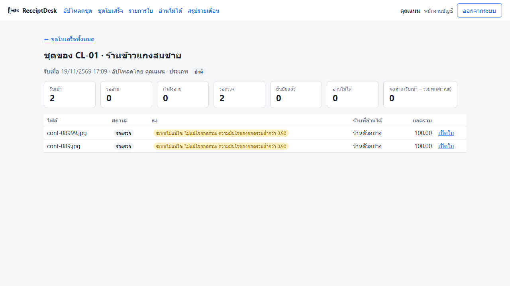
batch page after reading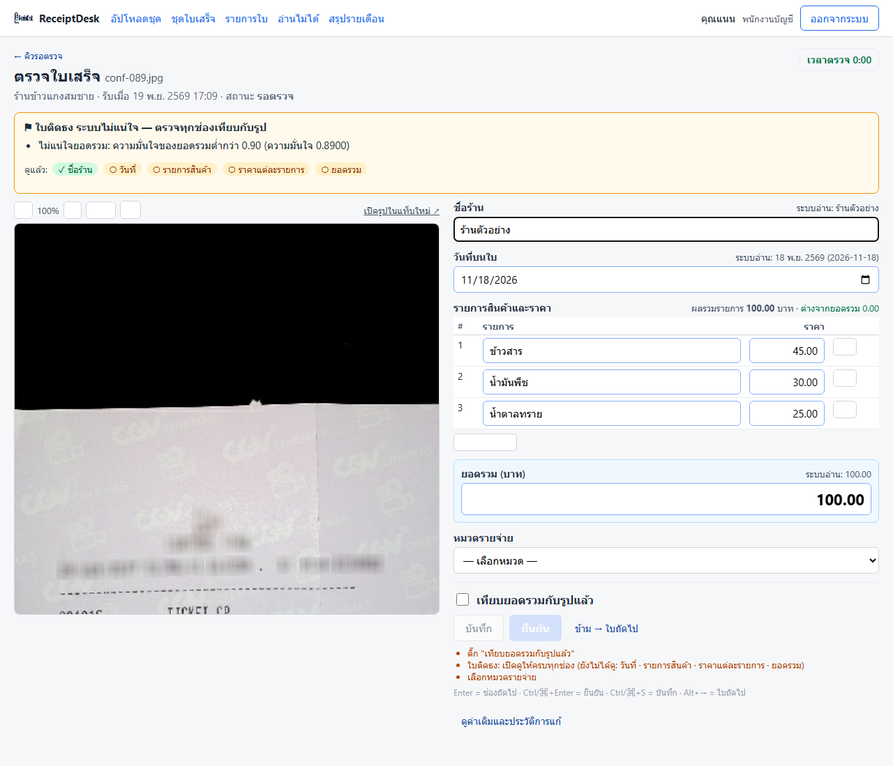
review page conf-089.jpg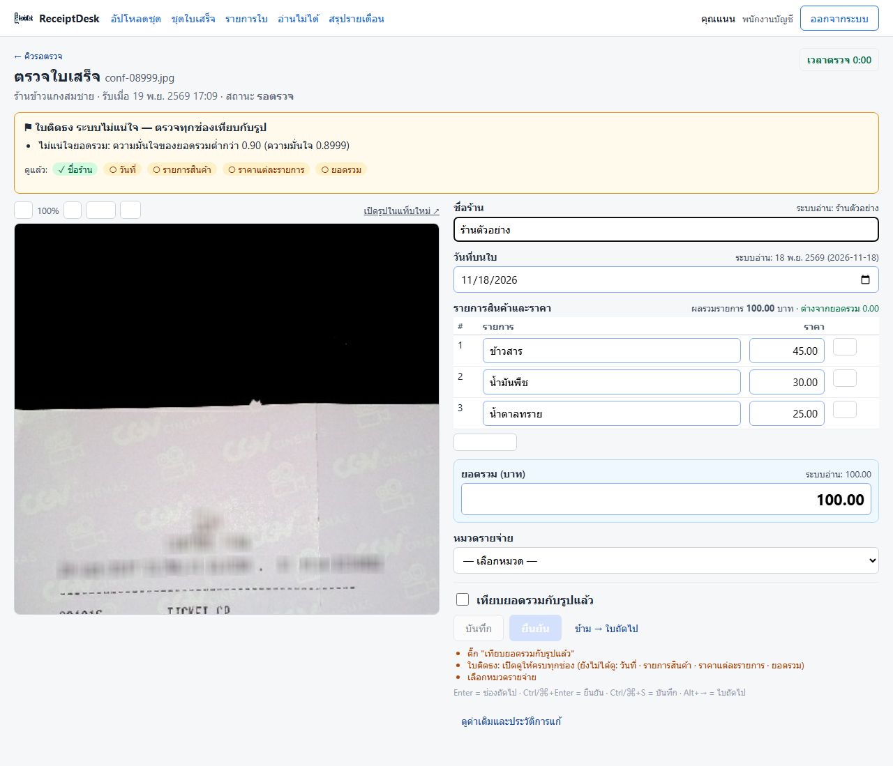
review page conf-08999.jpg- W7 upload application/json
- W12 receipts after reading application/json
- review page conf-089.jpg application/json
- review page conf-08999.jpg application/json
ผ่าน TC-2-03 ความมั่นใจเท่ากับและสูงกว่า 0.90 P2M
ผลที่คาดหวัง (แผน): ทั้ง 2 ใบไม่ติดธงใดเลย (0.90 ไม่ต่ำกว่า 0.90 · 0.91 > 0.90)
ที่มา: FR-09 · BR-04 · TD-BR04-b, c · เวลา 11.4 วินาที · รอบ: round1: passed
- W7 upload application/json
- W12 receipts after reading application/json
- review page conf-090.jpg application/json
- review page conf-091.jpg application/json
ผ่าน TC-2-04 ผลต่างไม่เกิน 1.00 บาท P2M
ผลที่คาดหวัง (แผน): ไม่ติดธง "ยอดไม่ตรงรายการ" · \
ที่มา: 99.01 − 100.00\ · เวลา 9.4 วินาที · รอบ: round1: passed
- W7 upload application/json
- W12 receipts after reading application/json
- review page diff-099.jpg application/json
- review page diff-100.jpg application/json
ล้ม TC-2-05 ผลต่างเกิน 1.00 บาท ทั้งขาดและเกิน P1M เว็บผิด
ผลที่คาดหวัง (แผน): ทั้ง 3 ใบติดธง "ยอดไม่ตรงรายการ" · เหตุผลแสดงยอดรวมที่อ่าน ผลรวมรายการ และผลต่าง: 100.00 / 98.99 / 1.01 · 100.00 / 101.01 / 1.01 · 100.00 / 98.51 / 1.49 ล้วน > 1.00
ที่มา: FR-09 · BR-05 · TD-BR05-c, d, e · เวลา 9.7 วินาที · รอบ: round1: failed
คัดแยก: ธงถูกต้องทั้ง 3 ใบ แต่เหตุผลของธงบอกแค่ผลต่าง (เช่น 1.01 บาท) ไม่บอกยอดรวมที่อ่านและผลรวมรายการตามที่ FR-09 / แผนกำหนด
ข้อความที่ล้ม
Error: diff-101.jpg: เหตุผลแสดงยอดรวมที่อ่าน 100 — text "ยอดไม่ตรงรายการ: ผลรวมรายการต่างจากยอดรวม 1.01 บาท (เกิน 1.00 บาท)"
expect(received).toContain(expected) // indexOf
Expected value: 10000
Received array: [101, 100]
202 | expect.soft(v.mismatch.present, `${c.f}: ติดธง "ยอดไม่ตรงรายการ"`).toBe(true);
203 | const nums = moneyInText(v.mismatch.text);
> 204 | expect.soft(nums, `${c.f}: เหตุผลแสดงยอดรวมที่อ่าน ${c.total / 100} — text "${v.mismatch.text}"`).toContain(c.total);
| ^
205 | expect.soft(nums, `${c.f}: เหตุผลแสดงผลรวมรายการ ${(c.sum / 100).toFixed(2)} — text "${v.mismatch.text}"`).toContain(c.sum);
206 | expect.soft(nums, `${c.f}: เหตุผลแสดงผลต่าง ${(c.diff / 100).toFixed(2)} — text "${v.mismatch.text}"`).toContain(c.diff);
207 | }
at C:\Users\oishi\Documents\GitHub\CWN\Teaching\03_week03\04_Agent_Team_End_to_End\02_receipt_desk\test\e2e\tests\52-flags.spec.ts:204:105Error: diff-101.jpg: เหตุผลแสดงผลรวมรายการ 98.99 — text "ยอดไม่ตรงรายการ: ผลรวมรายการต่างจากยอดรวม 1.01 บาท (เกิน 1.00 บาท)"
expect(received).toContain(expected) // indexOf
Expected value: 9899
Received array: [101, 100]
203 | const nums = moneyInText(v.mismatch.text);
204 | expect.soft(nums, `${c.f}: เหตุผลแสดงยอดรวมที่อ่าน ${c.total / 100} — text "${v.mismatch.text}"`).toContain(c.total);
> 205 | expect.soft(nums, `${c.f}: เหตุผลแสดงผลรวมรายการ ${(c.sum / 100).toFixed(2)} — text "${v.mismatch.text}"`).toContain(c.sum);
| ^
206 | expect.soft(nums, `${c.f}: เหตุผลแสดงผลต่าง ${(c.diff / 100).toFixed(2)} — text "${v.mismatch.text}"`).toContain(c.diff);
207 | }
208 | } finally { await p.context.close(); await p.api.dispose(); }
at C:\Users\oishi\Documents\GitHub\CWN\Teaching\03_week03\04_Agent_Team_End_to_End\02_receipt_desk\test\e2e\tests\52-flags.spec.ts:205:114Error: diff-over-101.jpg: เหตุผลแสดงยอดรวมที่อ่าน 100 — text "ยอดไม่ตรงรายการ: ผลรวมรายการต่างจากยอดรวม 1.01 บาท (เกิน 1.00 บาท)"
expect(received).toContain(expected) // indexOf
Expected value: 10000
Received array: [101, 100]
202 | expect.soft(v.mismatch.present, `${c.f}: ติดธง "ยอดไม่ตรงรายการ"`).toBe(true);
203 | const nums = moneyInText(v.mismatch.text);
> 204 | expect.soft(nums, `${c.f}: เหตุผลแสดงยอดรวมที่อ่าน ${c.total / 100} — text "${v.mismatch.text}"`).toContain(c.total);
| ^
205 | expect.soft(nums, `${c.f}: เหตุผลแสดงผลรวมรายการ ${(c.sum / 100).toFixed(2)} — text "${v.mismatch.text}"`).toContain(c.sum);
206 | expect.soft(nums, `${c.f}: เหตุผลแสดงผลต่าง ${(c.diff / 100).toFixed(2)} — text "${v.mismatch.text}"`).toContain(c.diff);
207 | }
at C:\Users\oishi\Documents\GitHub\CWN\Teaching\03_week03\04_Agent_Team_End_to_End\02_receipt_desk\test\e2e\tests\52-flags.spec.ts:204:105Error: diff-over-101.jpg: เหตุผลแสดงผลรวมรายการ 101.01 — text "ยอดไม่ตรงรายการ: ผลรวมรายการต่างจากยอดรวม 1.01 บาท (เกิน 1.00 บาท)"
expect(received).toContain(expected) // indexOf
Expected value: 10101
Received array: [101, 100]
203 | const nums = moneyInText(v.mismatch.text);
204 | expect.soft(nums, `${c.f}: เหตุผลแสดงยอดรวมที่อ่าน ${c.total / 100} — text "${v.mismatch.text}"`).toContain(c.total);
> 205 | expect.soft(nums, `${c.f}: เหตุผลแสดงผลรวมรายการ ${(c.sum / 100).toFixed(2)} — text "${v.mismatch.text}"`).toContain(c.sum);
| ^
206 | expect.soft(nums, `${c.f}: เหตุผลแสดงผลต่าง ${(c.diff / 100).toFixed(2)} — text "${v.mismatch.text}"`).toContain(c.diff);
207 | }
208 | } finally { await p.context.close(); await p.api.dispose(); }
at C:\Users\oishi\Documents\GitHub\CWN\Teaching\03_week03\04_Agent_Team_End_to_End\02_receipt_desk\test\e2e\tests\52-flags.spec.ts:205:114Error: diff-149.jpg: เหตุผลแสดงยอดรวมที่อ่าน 100 — text "ยอดไม่ตรงรายการ: ผลรวมรายการต่างจากยอดรวม 1.49 บาท (เกิน 1.00 บาท)"
expect(received).toContain(expected) // indexOf
Expected value: 10000
Received array: [149, 100]
202 | expect.soft(v.mismatch.present, `${c.f}: ติดธง "ยอดไม่ตรงรายการ"`).toBe(true);
203 | const nums = moneyInText(v.mismatch.text);
> 204 | expect.soft(nums, `${c.f}: เหตุผลแสดงยอดรวมที่อ่าน ${c.total / 100} — text "${v.mismatch.text}"`).toContain(c.total);
| ^
205 | expect.soft(nums, `${c.f}: เหตุผลแสดงผลรวมรายการ ${(c.sum / 100).toFixed(2)} — text "${v.mismatch.text}"`).toContain(c.sum);
206 | expect.soft(nums, `${c.f}: เหตุผลแสดงผลต่าง ${(c.diff / 100).toFixed(2)} — text "${v.mismatch.text}"`).toContain(c.diff);
207 | }
at C:\Users\oishi\Documents\GitHub\CWN\Teaching\03_week03\04_Agent_Team_End_to_End\02_receipt_desk\test\e2e\tests\52-flags.spec.ts:204:105Error: diff-149.jpg: เหตุผลแสดงผลรวมรายการ 98.51 — text "ยอดไม่ตรงรายการ: ผลรวมรายการต่างจากยอดรวม 1.49 บาท (เกิน 1.00 บาท)"
expect(received).toContain(expected) // indexOf
Expected value: 9851
Received array: [149, 100]
203 | const nums = moneyInText(v.mismatch.text);
204 | expect.soft(nums, `${c.f}: เหตุผลแสดงยอดรวมที่อ่าน ${c.total / 100} — text "${v.mismatch.text}"`).toContain(c.total);
> 205 | expect.soft(nums, `${c.f}: เหตุผลแสดงผลรวมรายการ ${(c.sum / 100).toFixed(2)} — text "${v.mismatch.text}"`).toContain(c.sum);
| ^
206 | expect.soft(nums, `${c.f}: เหตุผลแสดงผลต่าง ${(c.diff / 100).toFixed(2)} — text "${v.mismatch.text}"`).toContain(c.diff);
207 | }
208 | } finally { await p.context.close(); await p.api.dispose(); }
at C:\Users\oishi\Documents\GitHub\CWN\Teaching\03_week03\04_Agent_Team_End_to_End\02_receipt_desk\test\e2e\tests\52-flags.spec.ts:205:114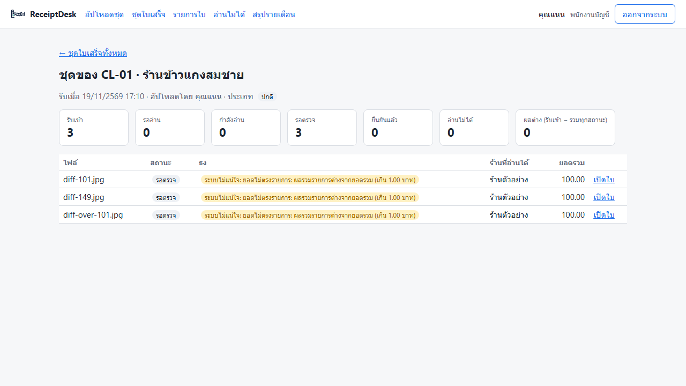
batch page after reading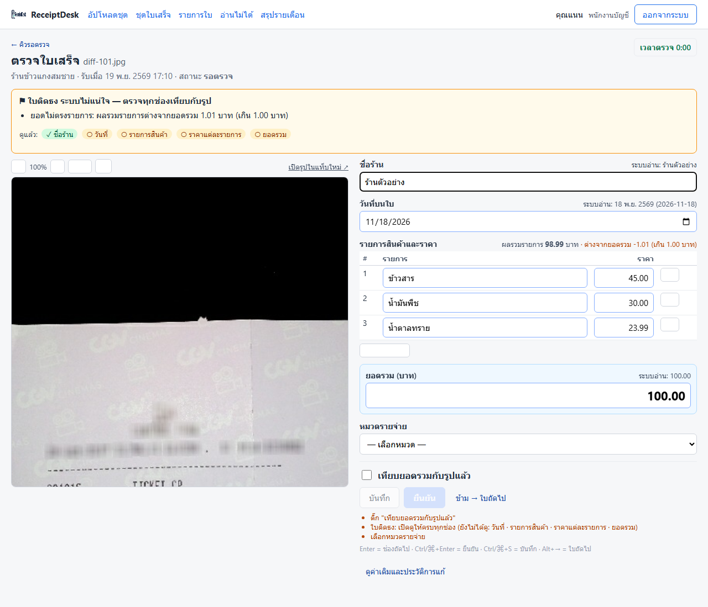
review page diff-101.jpgreview page diff-over-101.jpg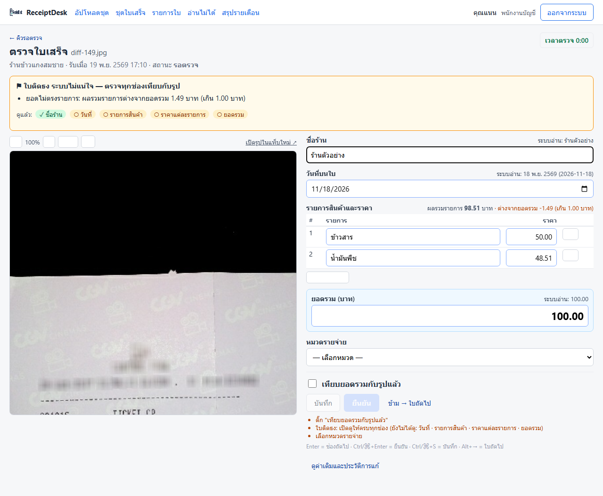
review page diff-149.jpg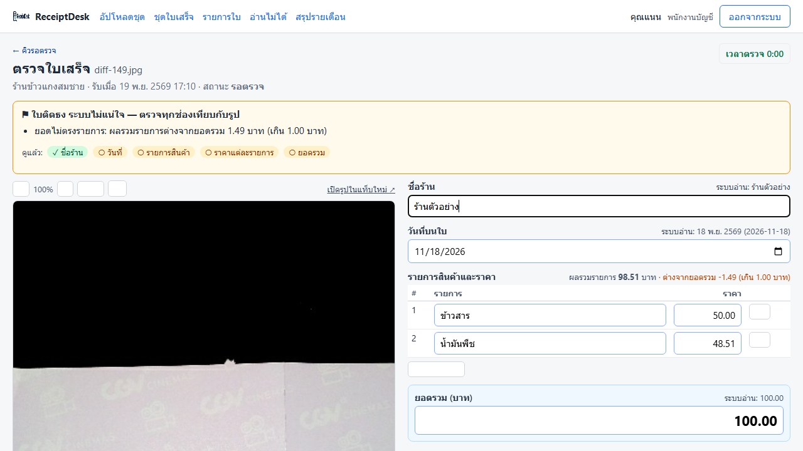
screenshot- W7 upload application/json
- W12 receipts after reading application/json
- review page diff-101.jpg application/json
- review page diff-over-101.jpg application/json
- review page diff-149.jpg application/json
- error-context text/markdown
- trace application/zip · เปิดด้วย npx playwright show-trace
ผ่าน TC-2-06 ติด 2 ธง และตัวกรองเฉพาะใบติดธง P1M
ผลที่คาดหวัง (แผน): `both-flags` ติดทั้ง 2 ธง พร้อมเหตุผลทั้ง 2 ข้อ (0.50 < 0.90 และ \
ที่มา: 95.00 − 100.00\ · เวลา 35.4 วินาที · รอบ: round1: passed
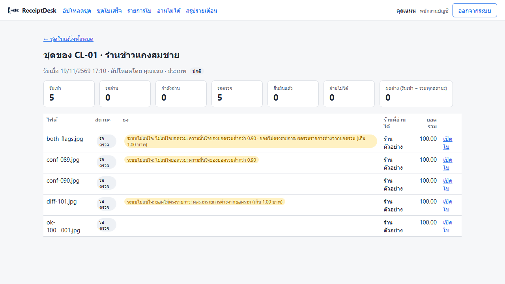
batch page after reading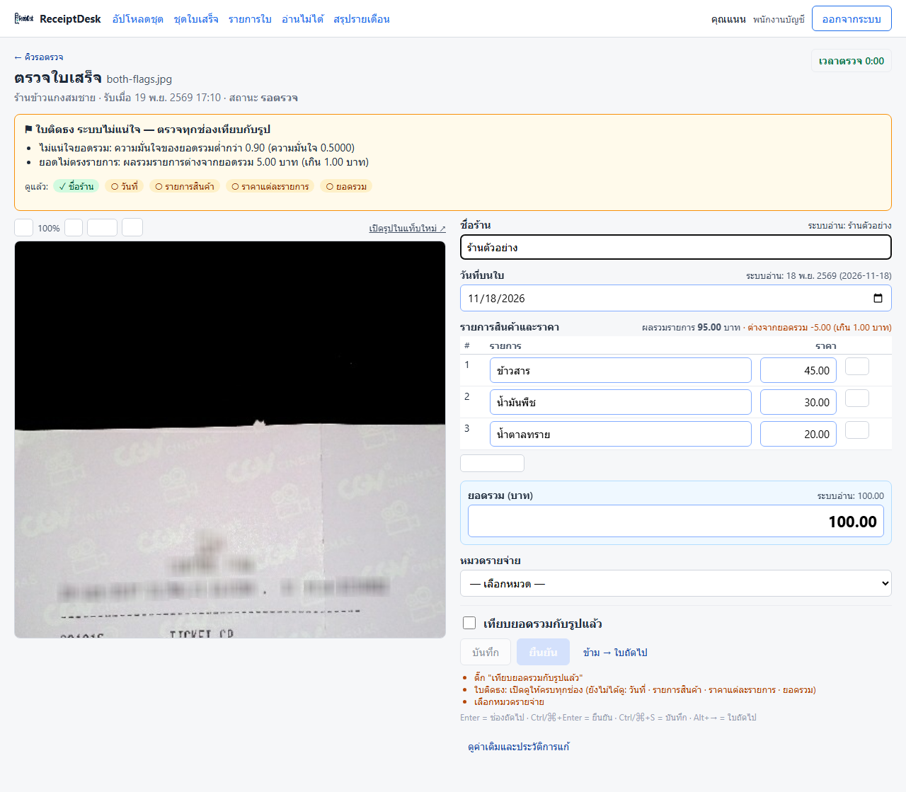
review page both-flags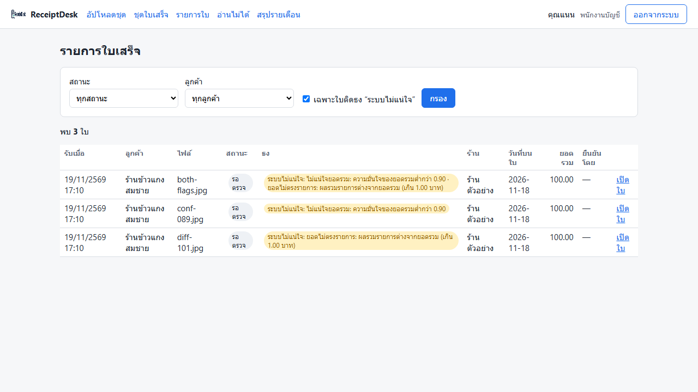
receipts filtered flagged- W7 upload application/json
- W12 receipts after reading application/json
- review page both-flags application/json
- flagged filter rows of this batch application/json
- W11 flagged=true (ids of this batch) application/json
ล้ม TC-2-07 โมเดลจริงอ่านใบเสร็จจริง 12 ใบ (smoke) P1R เว็บผิด
ผลที่คาดหวัง (แผน): ① ทั้ง 12 ใบเป็น "รอตรวจ" มีโครงสร้าง 5 ช่องครบ (M6 ≥ 99%: 12 × 0.99 = 11.88 → ต้องครบ 12) · ② ชื่อร้านไม่ว่างและไม่ใช่ `UNKNOWN` · วันที่เป็นวันที่จริงที่ไม่ใช่ `1900-01-01` (FR-03 · ชุดนี้ไม่มีเฉลยชื่อร้าน/วันที่ จึงตรวจได้แค่ว่าอ่านออกมาจริง) · ③ ใบที่ยอดรวม (ปัด 2 ตำแหน่ง) ≠ `total` ในเฉลย ต้องติดธงทุกใบ: เกณฑ์ของรอบย่อยนี้ = ยอมให้ผิดและไม่ติดธงได้ 0 ใบ [ข้อสมมติของแผน] ไม่ใช่การรับรอง M2 (M2 ใช้ชุด ≥ 200 ใบ) · ④ บันทึกจำนวนรายการเทียบ `n_items` และยอดถูก ÷ 12 เพื่อดูแนวโน้ม M1/M7 ไม่ใช้ตัดสิน
ที่มา: FR-03 · FR-09 · NFR-01 (smoke) · เวลา 42.9 วินาที · รอบ: round1: failed
คัดแยก: โมเดลจริง 12/12 ใบได้ชื่อร้าน UNKNOWN และวันที่ 1900-01-01 (FR-03 อ่านได้แค่ 3 จาก 5 ช่อง) · ส่วน ① ครบ 12 ใบรอตรวจ และ ③ ยอดผิดที่ไม่ติดธง = 0 ผ่าน · ยอดถูก 11/12
- E6 gateway queue (GET /v1/queue) not checked from the test (API key of the gateway is not used by the suite); W23 pending 0 · urgent 0 · workers 2 checked
- trend total correct 11/12 · items count match 10/12 · wrong & unflagged 0
ข้อความที่ล้ม
Error: te0000.jpg: ชื่อร้านไม่ใช่ UNKNOWN
expect(received).not.toBe(expected) // Object.is equality
Expected: not "UNKNOWN"
294 | // ② merchant / date read for real
295 | expect.soft((r?.merchant ?? '').trim(), `${g.file}: ชื่อร้านไม่ว่าง`).not.toBe('');
> 296 | expect.soft((r?.merchant ?? '').trim().toUpperCase(), `${g.file}: ชื่อร้านไม่ใช่ UNKNOWN`).not.toBe('UNKNOWN');
| ^
297 | const d = String(r?.receiptDate ?? '');
298 | expect.soft(/^\d{4}-\d{2}-\d{2}/.test(d) && !Number.isNaN(Date.parse(d.slice(0, 10))), `${g.file}: วันที่เป็นวันที่จริง (got "${d}")`).toBe(true);
299 | expect.soft(d.slice(0, 10), `${g.file}: วันที่ไม่ใช่ 1900-01-01`).not.toBe('1900-01-01');
at C:\Users\oishi\Documents\GitHub\CWN\Teaching\03_week03\04_Agent_Team_End_to_End\02_receipt_desk\test\e2e\tests\52-flags.spec.ts:296:102Error: te0000.jpg: วันที่ไม่ใช่ 1900-01-01
expect(received).not.toBe(expected) // Object.is equality
Expected: not "1900-01-01"
297 | const d = String(r?.receiptDate ?? '');
298 | expect.soft(/^\d{4}-\d{2}-\d{2}/.test(d) && !Number.isNaN(Date.parse(d.slice(0, 10))), `${g.file}: วันที่เป็นวันที่จริง (got "${d}")`).toBe(true);
> 299 | expect.soft(d.slice(0, 10), `${g.file}: วันที่ไม่ใช่ 1900-01-01`).not.toBe('1900-01-01');
| ^
300 | // ③ wrong total must be flagged
301 | if (!ok) expect.soft(flagged, `${g.file}: ยอดอ่าน ${r?.total} ≠ เฉลย ${g.total} ต้องติดธง`).toBe(true);
302 | }
at C:\Users\oishi\Documents\GitHub\CWN\Teaching\03_week03\04_Agent_Team_End_to_End\02_receipt_desk\test\e2e\tests\52-flags.spec.ts:299:77Error: te0001.jpg: ชื่อร้านไม่ใช่ UNKNOWN
expect(received).not.toBe(expected) // Object.is equality
Expected: not "UNKNOWN"
294 | // ② merchant / date read for real
295 | expect.soft((r?.merchant ?? '').trim(), `${g.file}: ชื่อร้านไม่ว่าง`).not.toBe('');
> 296 | expect.soft((r?.merchant ?? '').trim().toUpperCase(), `${g.file}: ชื่อร้านไม่ใช่ UNKNOWN`).not.toBe('UNKNOWN');
| ^
297 | const d = String(r?.receiptDate ?? '');
298 | expect.soft(/^\d{4}-\d{2}-\d{2}/.test(d) && !Number.isNaN(Date.parse(d.slice(0, 10))), `${g.file}: วันที่เป็นวันที่จริง (got "${d}")`).toBe(true);
299 | expect.soft(d.slice(0, 10), `${g.file}: วันที่ไม่ใช่ 1900-01-01`).not.toBe('1900-01-01');
at C:\Users\oishi\Documents\GitHub\CWN\Teaching\03_week03\04_Agent_Team_End_to_End\02_receipt_desk\test\e2e\tests\52-flags.spec.ts:296:102Error: te0001.jpg: วันที่ไม่ใช่ 1900-01-01
expect(received).not.toBe(expected) // Object.is equality
Expected: not "1900-01-01"
297 | const d = String(r?.receiptDate ?? '');
298 | expect.soft(/^\d{4}-\d{2}-\d{2}/.test(d) && !Number.isNaN(Date.parse(d.slice(0, 10))), `${g.file}: วันที่เป็นวันที่จริง (got "${d}")`).toBe(true);
> 299 | expect.soft(d.slice(0, 10), `${g.file}: วันที่ไม่ใช่ 1900-01-01`).not.toBe('1900-01-01');
| ^
300 | // ③ wrong total must be flagged
301 | if (!ok) expect.soft(flagged, `${g.file}: ยอดอ่าน ${r?.total} ≠ เฉลย ${g.total} ต้องติดธง`).toBe(true);
302 | }
at C:\Users\oishi\Documents\GitHub\CWN\Teaching\03_week03\04_Agent_Team_End_to_End\02_receipt_desk\test\e2e\tests\52-flags.spec.ts:299:77Error: te0002.jpg: ชื่อร้านไม่ใช่ UNKNOWN
expect(received).not.toBe(expected) // Object.is equality
Expected: not "UNKNOWN"
294 | // ② merchant / date read for real
295 | expect.soft((r?.merchant ?? '').trim(), `${g.file}: ชื่อร้านไม่ว่าง`).not.toBe('');
> 296 | expect.soft((r?.merchant ?? '').trim().toUpperCase(), `${g.file}: ชื่อร้านไม่ใช่ UNKNOWN`).not.toBe('UNKNOWN');
| ^
297 | const d = String(r?.receiptDate ?? '');
298 | expect.soft(/^\d{4}-\d{2}-\d{2}/.test(d) && !Number.isNaN(Date.parse(d.slice(0, 10))), `${g.file}: วันที่เป็นวันที่จริง (got "${d}")`).toBe(true);
299 | expect.soft(d.slice(0, 10), `${g.file}: วันที่ไม่ใช่ 1900-01-01`).not.toBe('1900-01-01');
at C:\Users\oishi\Documents\GitHub\CWN\Teaching\03_week03\04_Agent_Team_End_to_End\02_receipt_desk\test\e2e\tests\52-flags.spec.ts:296:102Error: te0002.jpg: วันที่ไม่ใช่ 1900-01-01
expect(received).not.toBe(expected) // Object.is equality
Expected: not "1900-01-01"
297 | const d = String(r?.receiptDate ?? '');
298 | expect.soft(/^\d{4}-\d{2}-\d{2}/.test(d) && !Number.isNaN(Date.parse(d.slice(0, 10))), `${g.file}: วันที่เป็นวันที่จริง (got "${d}")`).toBe(true);
> 299 | expect.soft(d.slice(0, 10), `${g.file}: วันที่ไม่ใช่ 1900-01-01`).not.toBe('1900-01-01');
| ^
300 | // ③ wrong total must be flagged
301 | if (!ok) expect.soft(flagged, `${g.file}: ยอดอ่าน ${r?.total} ≠ เฉลย ${g.total} ต้องติดธง`).toBe(true);
302 | }
at C:\Users\oishi\Documents\GitHub\CWN\Teaching\03_week03\04_Agent_Team_End_to_End\02_receipt_desk\test\e2e\tests\52-flags.spec.ts:299:77Error: te0003.jpg: ชื่อร้านไม่ใช่ UNKNOWN
expect(received).not.toBe(expected) // Object.is equality
Expected: not "UNKNOWN"
294 | // ② merchant / date read for real
295 | expect.soft((r?.merchant ?? '').trim(), `${g.file}: ชื่อร้านไม่ว่าง`).not.toBe('');
> 296 | expect.soft((r?.merchant ?? '').trim().toUpperCase(), `${g.file}: ชื่อร้านไม่ใช่ UNKNOWN`).not.toBe('UNKNOWN');
| ^
297 | const d = String(r?.receiptDate ?? '');
298 | expect.soft(/^\d{4}-\d{2}-\d{2}/.test(d) && !Number.isNaN(Date.parse(d.slice(0, 10))), `${g.file}: วันที่เป็นวันที่จริง (got "${d}")`).toBe(true);
299 | expect.soft(d.slice(0, 10), `${g.file}: วันที่ไม่ใช่ 1900-01-01`).not.toBe('1900-01-01');
at C:\Users\oishi\Documents\GitHub\CWN\Teaching\03_week03\04_Agent_Team_End_to_End\02_receipt_desk\test\e2e\tests\52-flags.spec.ts:296:102Error: te0003.jpg: วันที่ไม่ใช่ 1900-01-01
expect(received).not.toBe(expected) // Object.is equality
Expected: not "1900-01-01"
297 | const d = String(r?.receiptDate ?? '');
298 | expect.soft(/^\d{4}-\d{2}-\d{2}/.test(d) && !Number.isNaN(Date.parse(d.slice(0, 10))), `${g.file}: วันที่เป็นวันที่จริง (got "${d}")`).toBe(true);
> 299 | expect.soft(d.slice(0, 10), `${g.file}: วันที่ไม่ใช่ 1900-01-01`).not.toBe('1900-01-01');
| ^
300 | // ③ wrong total must be flagged
301 | if (!ok) expect.soft(flagged, `${g.file}: ยอดอ่าน ${r?.total} ≠ เฉลย ${g.total} ต้องติดธง`).toBe(true);
302 | }
at C:\Users\oishi\Documents\GitHub\CWN\Teaching\03_week03\04_Agent_Team_End_to_End\02_receipt_desk\test\e2e\tests\52-flags.spec.ts:299:77Error: te0004.jpg: ชื่อร้านไม่ใช่ UNKNOWN
expect(received).not.toBe(expected) // Object.is equality
Expected: not "UNKNOWN"
294 | // ② merchant / date read for real
295 | expect.soft((r?.merchant ?? '').trim(), `${g.file}: ชื่อร้านไม่ว่าง`).not.toBe('');
> 296 | expect.soft((r?.merchant ?? '').trim().toUpperCase(), `${g.file}: ชื่อร้านไม่ใช่ UNKNOWN`).not.toBe('UNKNOWN');
| ^
297 | const d = String(r?.receiptDate ?? '');
298 | expect.soft(/^\d{4}-\d{2}-\d{2}/.test(d) && !Number.isNaN(Date.parse(d.slice(0, 10))), `${g.file}: วันที่เป็นวันที่จริง (got "${d}")`).toBe(true);
299 | expect.soft(d.slice(0, 10), `${g.file}: วันที่ไม่ใช่ 1900-01-01`).not.toBe('1900-01-01');
at C:\Users\oishi\Documents\GitHub\CWN\Teaching\03_week03\04_Agent_Team_End_to_End\02_receipt_desk\test\e2e\tests\52-flags.spec.ts:296:102Error: te0004.jpg: วันที่ไม่ใช่ 1900-01-01
expect(received).not.toBe(expected) // Object.is equality
Expected: not "1900-01-01"
297 | const d = String(r?.receiptDate ?? '');
298 | expect.soft(/^\d{4}-\d{2}-\d{2}/.test(d) && !Number.isNaN(Date.parse(d.slice(0, 10))), `${g.file}: วันที่เป็นวันที่จริง (got "${d}")`).toBe(true);
> 299 | expect.soft(d.slice(0, 10), `${g.file}: วันที่ไม่ใช่ 1900-01-01`).not.toBe('1900-01-01');
| ^
300 | // ③ wrong total must be flagged
301 | if (!ok) expect.soft(flagged, `${g.file}: ยอดอ่าน ${r?.total} ≠ เฉลย ${g.total} ต้องติดธง`).toBe(true);
302 | }
at C:\Users\oishi\Documents\GitHub\CWN\Teaching\03_week03\04_Agent_Team_End_to_End\02_receipt_desk\test\e2e\tests\52-flags.spec.ts:299:77Error: te0005.jpg: ชื่อร้านไม่ใช่ UNKNOWN
expect(received).not.toBe(expected) // Object.is equality
Expected: not "UNKNOWN"
294 | // ② merchant / date read for real
295 | expect.soft((r?.merchant ?? '').trim(), `${g.file}: ชื่อร้านไม่ว่าง`).not.toBe('');
> 296 | expect.soft((r?.merchant ?? '').trim().toUpperCase(), `${g.file}: ชื่อร้านไม่ใช่ UNKNOWN`).not.toBe('UNKNOWN');
| ^
297 | const d = String(r?.receiptDate ?? '');
298 | expect.soft(/^\d{4}-\d{2}-\d{2}/.test(d) && !Number.isNaN(Date.parse(d.slice(0, 10))), `${g.file}: วันที่เป็นวันที่จริง (got "${d}")`).toBe(true);
299 | expect.soft(d.slice(0, 10), `${g.file}: วันที่ไม่ใช่ 1900-01-01`).not.toBe('1900-01-01');
at C:\Users\oishi\Documents\GitHub\CWN\Teaching\03_week03\04_Agent_Team_End_to_End\02_receipt_desk\test\e2e\tests\52-flags.spec.ts:296:102Error: te0005.jpg: วันที่ไม่ใช่ 1900-01-01
expect(received).not.toBe(expected) // Object.is equality
Expected: not "1900-01-01"
297 | const d = String(r?.receiptDate ?? '');
298 | expect.soft(/^\d{4}-\d{2}-\d{2}/.test(d) && !Number.isNaN(Date.parse(d.slice(0, 10))), `${g.file}: วันที่เป็นวันที่จริง (got "${d}")`).toBe(true);
> 299 | expect.soft(d.slice(0, 10), `${g.file}: วันที่ไม่ใช่ 1900-01-01`).not.toBe('1900-01-01');
| ^
300 | // ③ wrong total must be flagged
301 | if (!ok) expect.soft(flagged, `${g.file}: ยอดอ่าน ${r?.total} ≠ เฉลย ${g.total} ต้องติดธง`).toBe(true);
302 | }
at C:\Users\oishi\Documents\GitHub\CWN\Teaching\03_week03\04_Agent_Team_End_to_End\02_receipt_desk\test\e2e\tests\52-flags.spec.ts:299:77Error: te0006.jpg: ชื่อร้านไม่ใช่ UNKNOWN
expect(received).not.toBe(expected) // Object.is equality
Expected: not "UNKNOWN"
294 | // ② merchant / date read for real
295 | expect.soft((r?.merchant ?? '').trim(), `${g.file}: ชื่อร้านไม่ว่าง`).not.toBe('');
> 296 | expect.soft((r?.merchant ?? '').trim().toUpperCase(), `${g.file}: ชื่อร้านไม่ใช่ UNKNOWN`).not.toBe('UNKNOWN');
| ^
297 | const d = String(r?.receiptDate ?? '');
298 | expect.soft(/^\d{4}-\d{2}-\d{2}/.test(d) && !Number.isNaN(Date.parse(d.slice(0, 10))), `${g.file}: วันที่เป็นวันที่จริง (got "${d}")`).toBe(true);
299 | expect.soft(d.slice(0, 10), `${g.file}: วันที่ไม่ใช่ 1900-01-01`).not.toBe('1900-01-01');
at C:\Users\oishi\Documents\GitHub\CWN\Teaching\03_week03\04_Agent_Team_End_to_End\02_receipt_desk\test\e2e\tests\52-flags.spec.ts:296:102Error: te0006.jpg: วันที่ไม่ใช่ 1900-01-01
expect(received).not.toBe(expected) // Object.is equality
Expected: not "1900-01-01"
297 | const d = String(r?.receiptDate ?? '');
298 | expect.soft(/^\d{4}-\d{2}-\d{2}/.test(d) && !Number.isNaN(Date.parse(d.slice(0, 10))), `${g.file}: วันที่เป็นวันที่จริง (got "${d}")`).toBe(true);
> 299 | expect.soft(d.slice(0, 10), `${g.file}: วันที่ไม่ใช่ 1900-01-01`).not.toBe('1900-01-01');
| ^
300 | // ③ wrong total must be flagged
301 | if (!ok) expect.soft(flagged, `${g.file}: ยอดอ่าน ${r?.total} ≠ เฉลย ${g.total} ต้องติดธง`).toBe(true);
302 | }
at C:\Users\oishi\Documents\GitHub\CWN\Teaching\03_week03\04_Agent_Team_End_to_End\02_receipt_desk\test\e2e\tests\52-flags.spec.ts:299:77Error: te0007.jpg: ชื่อร้านไม่ใช่ UNKNOWN
expect(received).not.toBe(expected) // Object.is equality
Expected: not "UNKNOWN"
294 | // ② merchant / date read for real
295 | expect.soft((r?.merchant ?? '').trim(), `${g.file}: ชื่อร้านไม่ว่าง`).not.toBe('');
> 296 | expect.soft((r?.merchant ?? '').trim().toUpperCase(), `${g.file}: ชื่อร้านไม่ใช่ UNKNOWN`).not.toBe('UNKNOWN');
| ^
297 | const d = String(r?.receiptDate ?? '');
298 | expect.soft(/^\d{4}-\d{2}-\d{2}/.test(d) && !Number.isNaN(Date.parse(d.slice(0, 10))), `${g.file}: วันที่เป็นวันที่จริง (got "${d}")`).toBe(true);
299 | expect.soft(d.slice(0, 10), `${g.file}: วันที่ไม่ใช่ 1900-01-01`).not.toBe('1900-01-01');
at C:\Users\oishi\Documents\GitHub\CWN\Teaching\03_week03\04_Agent_Team_End_to_End\02_receipt_desk\test\e2e\tests\52-flags.spec.ts:296:102Error: te0007.jpg: วันที่ไม่ใช่ 1900-01-01
expect(received).not.toBe(expected) // Object.is equality
Expected: not "1900-01-01"
297 | const d = String(r?.receiptDate ?? '');
298 | expect.soft(/^\d{4}-\d{2}-\d{2}/.test(d) && !Number.isNaN(Date.parse(d.slice(0, 10))), `${g.file}: วันที่เป็นวันที่จริง (got "${d}")`).toBe(true);
> 299 | expect.soft(d.slice(0, 10), `${g.file}: วันที่ไม่ใช่ 1900-01-01`).not.toBe('1900-01-01');
| ^
300 | // ③ wrong total must be flagged
301 | if (!ok) expect.soft(flagged, `${g.file}: ยอดอ่าน ${r?.total} ≠ เฉลย ${g.total} ต้องติดธง`).toBe(true);
302 | }
at C:\Users\oishi\Documents\GitHub\CWN\Teaching\03_week03\04_Agent_Team_End_to_End\02_receipt_desk\test\e2e\tests\52-flags.spec.ts:299:77Error: te0008.jpg: ชื่อร้านไม่ใช่ UNKNOWN
expect(received).not.toBe(expected) // Object.is equality
Expected: not "UNKNOWN"
294 | // ② merchant / date read for real
295 | expect.soft((r?.merchant ?? '').trim(), `${g.file}: ชื่อร้านไม่ว่าง`).not.toBe('');
> 296 | expect.soft((r?.merchant ?? '').trim().toUpperCase(), `${g.file}: ชื่อร้านไม่ใช่ UNKNOWN`).not.toBe('UNKNOWN');
| ^
297 | const d = String(r?.receiptDate ?? '');
298 | expect.soft(/^\d{4}-\d{2}-\d{2}/.test(d) && !Number.isNaN(Date.parse(d.slice(0, 10))), `${g.file}: วันที่เป็นวันที่จริง (got "${d}")`).toBe(true);
299 | expect.soft(d.slice(0, 10), `${g.file}: วันที่ไม่ใช่ 1900-01-01`).not.toBe('1900-01-01');
at C:\Users\oishi\Documents\GitHub\CWN\Teaching\03_week03\04_Agent_Team_End_to_End\02_receipt_desk\test\e2e\tests\52-flags.spec.ts:296:102Error: te0008.jpg: วันที่ไม่ใช่ 1900-01-01
expect(received).not.toBe(expected) // Object.is equality
Expected: not "1900-01-01"
297 | const d = String(r?.receiptDate ?? '');
298 | expect.soft(/^\d{4}-\d{2}-\d{2}/.test(d) && !Number.isNaN(Date.parse(d.slice(0, 10))), `${g.file}: วันที่เป็นวันที่จริง (got "${d}")`).toBe(true);
> 299 | expect.soft(d.slice(0, 10), `${g.file}: วันที่ไม่ใช่ 1900-01-01`).not.toBe('1900-01-01');
| ^
300 | // ③ wrong total must be flagged
301 | if (!ok) expect.soft(flagged, `${g.file}: ยอดอ่าน ${r?.total} ≠ เฉลย ${g.total} ต้องติดธง`).toBe(true);
302 | }
at C:\Users\oishi\Documents\GitHub\CWN\Teaching\03_week03\04_Agent_Team_End_to_End\02_receipt_desk\test\e2e\tests\52-flags.spec.ts:299:77Error: te0010.jpg: ชื่อร้านไม่ใช่ UNKNOWN
expect(received).not.toBe(expected) // Object.is equality
Expected: not "UNKNOWN"
294 | // ② merchant / date read for real
295 | expect.soft((r?.merchant ?? '').trim(), `${g.file}: ชื่อร้านไม่ว่าง`).not.toBe('');
> 296 | expect.soft((r?.merchant ?? '').trim().toUpperCase(), `${g.file}: ชื่อร้านไม่ใช่ UNKNOWN`).not.toBe('UNKNOWN');
| ^
297 | const d = String(r?.receiptDate ?? '');
298 | expect.soft(/^\d{4}-\d{2}-\d{2}/.test(d) && !Number.isNaN(Date.parse(d.slice(0, 10))), `${g.file}: วันที่เป็นวันที่จริง (got "${d}")`).toBe(true);
299 | expect.soft(d.slice(0, 10), `${g.file}: วันที่ไม่ใช่ 1900-01-01`).not.toBe('1900-01-01');
at C:\Users\oishi\Documents\GitHub\CWN\Teaching\03_week03\04_Agent_Team_End_to_End\02_receipt_desk\test\e2e\tests\52-flags.spec.ts:296:102Error: te0010.jpg: วันที่ไม่ใช่ 1900-01-01
expect(received).not.toBe(expected) // Object.is equality
Expected: not "1900-01-01"
297 | const d = String(r?.receiptDate ?? '');
298 | expect.soft(/^\d{4}-\d{2}-\d{2}/.test(d) && !Number.isNaN(Date.parse(d.slice(0, 10))), `${g.file}: วันที่เป็นวันที่จริง (got "${d}")`).toBe(true);
> 299 | expect.soft(d.slice(0, 10), `${g.file}: วันที่ไม่ใช่ 1900-01-01`).not.toBe('1900-01-01');
| ^
300 | // ③ wrong total must be flagged
301 | if (!ok) expect.soft(flagged, `${g.file}: ยอดอ่าน ${r?.total} ≠ เฉลย ${g.total} ต้องติดธง`).toBe(true);
302 | }
at C:\Users\oishi\Documents\GitHub\CWN\Teaching\03_week03\04_Agent_Team_End_to_End\02_receipt_desk\test\e2e\tests\52-flags.spec.ts:299:77Error: te0011.jpg: ชื่อร้านไม่ใช่ UNKNOWN
expect(received).not.toBe(expected) // Object.is equality
Expected: not "UNKNOWN"
294 | // ② merchant / date read for real
295 | expect.soft((r?.merchant ?? '').trim(), `${g.file}: ชื่อร้านไม่ว่าง`).not.toBe('');
> 296 | expect.soft((r?.merchant ?? '').trim().toUpperCase(), `${g.file}: ชื่อร้านไม่ใช่ UNKNOWN`).not.toBe('UNKNOWN');
| ^
297 | const d = String(r?.receiptDate ?? '');
298 | expect.soft(/^\d{4}-\d{2}-\d{2}/.test(d) && !Number.isNaN(Date.parse(d.slice(0, 10))), `${g.file}: วันที่เป็นวันที่จริง (got "${d}")`).toBe(true);
299 | expect.soft(d.slice(0, 10), `${g.file}: วันที่ไม่ใช่ 1900-01-01`).not.toBe('1900-01-01');
at C:\Users\oishi\Documents\GitHub\CWN\Teaching\03_week03\04_Agent_Team_End_to_End\02_receipt_desk\test\e2e\tests\52-flags.spec.ts:296:102Error: te0011.jpg: วันที่ไม่ใช่ 1900-01-01
expect(received).not.toBe(expected) // Object.is equality
Expected: not "1900-01-01"
297 | const d = String(r?.receiptDate ?? '');
298 | expect.soft(/^\d{4}-\d{2}-\d{2}/.test(d) && !Number.isNaN(Date.parse(d.slice(0, 10))), `${g.file}: วันที่เป็นวันที่จริง (got "${d}")`).toBe(true);
> 299 | expect.soft(d.slice(0, 10), `${g.file}: วันที่ไม่ใช่ 1900-01-01`).not.toBe('1900-01-01');
| ^
300 | // ③ wrong total must be flagged
301 | if (!ok) expect.soft(flagged, `${g.file}: ยอดอ่าน ${r?.total} ≠ เฉลย ${g.total} ต้องติดธง`).toBe(true);
302 | }
at C:\Users\oishi\Documents\GitHub\CWN\Teaching\03_week03\04_Agent_Team_End_to_End\02_receipt_desk\test\e2e\tests\52-flags.spec.ts:299:77Error: te0012.jpg: ชื่อร้านไม่ใช่ UNKNOWN
expect(received).not.toBe(expected) // Object.is equality
Expected: not "UNKNOWN"
294 | // ② merchant / date read for real
295 | expect.soft((r?.merchant ?? '').trim(), `${g.file}: ชื่อร้านไม่ว่าง`).not.toBe('');
> 296 | expect.soft((r?.merchant ?? '').trim().toUpperCase(), `${g.file}: ชื่อร้านไม่ใช่ UNKNOWN`).not.toBe('UNKNOWN');
| ^
297 | const d = String(r?.receiptDate ?? '');
298 | expect.soft(/^\d{4}-\d{2}-\d{2}/.test(d) && !Number.isNaN(Date.parse(d.slice(0, 10))), `${g.file}: วันที่เป็นวันที่จริง (got "${d}")`).toBe(true);
299 | expect.soft(d.slice(0, 10), `${g.file}: วันที่ไม่ใช่ 1900-01-01`).not.toBe('1900-01-01');
at C:\Users\oishi\Documents\GitHub\CWN\Teaching\03_week03\04_Agent_Team_End_to_End\02_receipt_desk\test\e2e\tests\52-flags.spec.ts:296:102Error: te0012.jpg: วันที่ไม่ใช่ 1900-01-01
expect(received).not.toBe(expected) // Object.is equality
Expected: not "1900-01-01"
297 | const d = String(r?.receiptDate ?? '');
298 | expect.soft(/^\d{4}-\d{2}-\d{2}/.test(d) && !Number.isNaN(Date.parse(d.slice(0, 10))), `${g.file}: วันที่เป็นวันที่จริง (got "${d}")`).toBe(true);
> 299 | expect.soft(d.slice(0, 10), `${g.file}: วันที่ไม่ใช่ 1900-01-01`).not.toBe('1900-01-01');
| ^
300 | // ③ wrong total must be flagged
301 | if (!ok) expect.soft(flagged, `${g.file}: ยอดอ่าน ${r?.total} ≠ เฉลย ${g.total} ต้องติดธง`).toBe(true);
302 | }
at C:\Users\oishi\Documents\GitHub\CWN\Teaching\03_week03\04_Agent_Team_End_to_End\02_receipt_desk\test\e2e\tests\52-flags.spec.ts:299:77- E6 W23 queue after reset application/json
- W7 upload 12 real application/json
- W12 12 real receipts application/json
- per-receipt comparison (satang) text/plain
- W23 at end application/json
- error-context text/markdown
- trace application/zip · เปิดด้วย npx playwright show-trace
ล้ม TC-2-08 โมเดลจริงไม่เดากับรูปที่อ่านไม่ได้ P2R เว็บผิด
ผลที่คาดหวัง (แผน): ทั้ง 2 ใบต้องติดธงอย่างน้อย 1 ธง หรือไปอยู่ "อ่านไม่ได้" · ใบที่มียอดรวมโดยไม่ติดธง = 0 (หลัก M5 "อย่าเดา")
ที่มา: NFR-01 M5 · FR-09 · FR-16 · เวลา 13.1 วินาที · รอบ: round1: failed
คัดแยก: รูปที่ครอปยอดรวมทิ้งและรูปเบลอได้ยอด 0.00 โดยไม่ติดธงและไม่ไป 'อ่านไม่ได้' (ผิดหลัก M5 อย่าเดา) · ยอด 0.00 ยืนยันไม่ได้ตาม BR-06 จึงไม่หลุดเข้าบัญชีโดยตรง
- deviation te0000-crop (bottom half cut) และ te0000-blur (Gaussian 25) ตรวจว่าอ่านยอดรวม 60,000.00 ไม่ได้โดยผู้ตรวจ 1 คน (แผนกำหนด 2 คน)
- E6 gateway queue (GET /v1/queue) not checked from the test (API key of the gateway is not used by the suite); W23 pending 0 · urgent 0 · workers 2 checked
ข้อความที่ล้ม
Error: te0000-crop.jpg: ติดธงอย่างน้อย 1 ธง หรืออยู่ "อ่านไม่ได้" (status review, total 0.00)
expect(received).toBe(expected) // Object.is equality
Expected: true
Received: false
343 | if (g) guessed++;
344 | rows.push(`| ${n} | ${r?.status} | ${r?.total ?? ''} | ${flagged ? 'yes' : 'no'} | ${(r?.flags?.reasons || []).join(' / ')} | ${g ? 'YES' : 'no'} |`);
> 345 | expect.soft(flagged || r?.status === 'unreadable', `${n}: ติดธงอย่างน้อย 1 ธง หรืออยู่ "อ่านไม่ได้" (status ${r?.status}, total ${r?.total})`).toBe(true);
| ^
346 | }
347 | await evidence(testInfo, 'per-receipt comparison', rows.join('\n'));
348 | expect.soft(guessed, 'ใบที่มียอดรวมโดยไม่ติดธง = 0 (M5 อย่าเดา)').toBe(0);
at C:\Users\oishi\Documents\GitHub\CWN\Teaching\03_week03\04_Agent_Team_End_to_End\02_receipt_desk\test\e2e\tests\52-flags.spec.ts:345:150Error: te0000-blur.jpg: ติดธงอย่างน้อย 1 ธง หรืออยู่ "อ่านไม่ได้" (status review, total 0.00)
expect(received).toBe(expected) // Object.is equality
Expected: true
Received: false
343 | if (g) guessed++;
344 | rows.push(`| ${n} | ${r?.status} | ${r?.total ?? ''} | ${flagged ? 'yes' : 'no'} | ${(r?.flags?.reasons || []).join(' / ')} | ${g ? 'YES' : 'no'} |`);
> 345 | expect.soft(flagged || r?.status === 'unreadable', `${n}: ติดธงอย่างน้อย 1 ธง หรืออยู่ "อ่านไม่ได้" (status ${r?.status}, total ${r?.total})`).toBe(true);
| ^
346 | }
347 | await evidence(testInfo, 'per-receipt comparison', rows.join('\n'));
348 | expect.soft(guessed, 'ใบที่มียอดรวมโดยไม่ติดธง = 0 (M5 อย่าเดา)').toBe(0);
at C:\Users\oishi\Documents\GitHub\CWN\Teaching\03_week03\04_Agent_Team_End_to_End\02_receipt_desk\test\e2e\tests\52-flags.spec.ts:345:150Error: ใบที่มียอดรวมโดยไม่ติดธง = 0 (M5 อย่าเดา)
expect(received).toBe(expected) // Object.is equality
Expected: 0
Received: 2
346 | }
347 | await evidence(testInfo, 'per-receipt comparison', rows.join('\n'));
> 348 | expect.soft(guessed, 'ใบที่มียอดรวมโดยไม่ติดธง = 0 (M5 อย่าเดา)').toBe(0);
| ^
349 |
350 | const qEnd = await queue(api);
351 | await evidence(testInfo, 'W23 at end', qEnd);
at C:\Users\oishi\Documents\GitHub\CWN\Teaching\03_week03\04_Agent_Team_End_to_End\02_receipt_desk\test\e2e\tests\52-flags.spec.ts:348:71
- E6 W23 queue after reset application/json
- W7 upload 2 unreadable images application/json
- W12 2 receipts application/json
- per-receipt comparison text/plain
- W23 at end application/json
- error-context text/markdown
- trace application/zip · เปิดด้วย npx playwright show-trace
5.3 การตรวจแก้และยืนยัน ผ่าน 5 · ล้ม 3 · บล็อก 0
ผ่าน TC-3-01 ยอดรวม 0.00 ยืนยันไม่ได้ P1M
ผลที่คาดหวัง (แผน): `422 total_invalid` · 0.00 < 0.01 · สถานะยังเป็น "รอตรวจ" · ไม่มีผู้ยืนยัน
ที่มา: FR-12 · BR-06 · TD-BR06-a · เวลา 449.7 วินาที · รอบ: round1: passed
- note confirm-button disabled on the page for total 0.00 -> same W15 sent by API
- W15 confirm total 0.00 application/json
- W12 after confirm application/json
ผ่าน TC-3-02 ยอดรวม 0.01 และ 0.02 ยืนยันได้ P1M
ผลที่คาดหวัง (แผน): ทั้ง 2 ใบเป็น "ยืนยันแล้ว" · `confirmed-by` = คุณพิมพ์ · มีเวลายืนยันไม่ว่าง (0.01 ≥ 0.01 · 0.02 ≥ 0.01)
ที่มา: FR-12 · FR-13 · BR-06 · TD-BR06-b, c · เวลา 9.6 วินาที · รอบ: round1: passed
- W15 total 0.01 application/json
- W12 total 0.01 application/json
- W15 total 0.02 application/json
- W12 total 0.02 application/json
ผ่าน TC-3-03 แก้ยอดเป็นค่าติดลบ P1M
ผลที่คาดหวัง (แผน): `422 total_invalid` (−5.00 < 0.01) · สถานะยังรอตรวจ · ประวัติแสดงค่าเดิม 100.00 → ค่าใหม่ −5.00 · ผู้แก้ คุณพิมพ์ · เวลา
ที่มา: FR-12 · FR-14 · BR-06 · TD-BR06-d · เวลา 9.3 วินาที · รอบ: round1: passed
- note confirm-button disabled for total -5.00 -> same W15 sent by API
- W14 total -5.00 application/json
- W15 confirm total -5.00 application/json
- W17 history application/json
ผ่าน TC-3-04 ยืนยันโดยไม่ติ๊กเทียบยอด / ไม่เลือกหมวด P2M
ผลที่คาดหวัง (แผน): ① ② ถูกปฏิเสธ (4xx) · สถานะยังรอตรวจ · ไม่มีผู้ยืนยัน (ไม่ตรวจรหัส error เพราะ DESIGN 9.2 ไม่ได้กำหนด) · ③ ยืนยันได้ เป็นตัวควบคุมว่า ① ② ถูกปฏิเสธเพราะเงื่อนไขที่ตัดออกเท่านั้น
ที่มา: FR-12 · FR-29 · A-02 · A-14 · เวลา 11.1 วินาที · รอบ: round1: passed
- ① totalChecked=false application/json
- ② no categoryId application/json
- ③ control application/json
- W12 end application/json
ผ่าน TC-3-05 ใบติดธงต้องเปิดดูก่อนยืนยัน P1M
ผลที่คาดหวัง (แผน): ① ถูกปฏิเสธ สถานะยังรอตรวจ (ตัดสินด้วย FR-12) · ② บันทึกผลส่งลูกค้าตาม AP-03 ไม่ใช้ตัดสินผ่าน/ตก · ③ ยืนยันได้ ผู้ยืนยัน คุณพิมพ์
ที่มา: FR-12 · US-09 · AP-03 · เวลา 10.0 วินาที · รอบ: round1: passed
- AP AP-03: W12 then W15 on conf-089__001 -> HTTP 200 · status=confirmed
- ① confirm without opening application/json
- ② W12 __001 (after ①) application/json
- ② confirm after W12 application/json
- ③ confirm on page application/json
- ③ W12 __002 application/json
ล้ม TC-3-06 แก้ทุกช่องโดยพนักงานและหัวหน้า ค่าเดิมไม่ถูกทับ P2M แผนผิด
ผลที่คาดหวัง (แผน): ① `items-sum` = 45.00 + 30.00 + 45.00 = 120.00 · ผลต่าง \
ที่มา: 120.00 − 120.00\ · เวลา 25.0 วินาที · รอบ: round1: failed
คัดแยก: ขั้น ① ให้แก้ชื่อรายการบรรทัด 1 เป็น 'ข้าวสาร' ซึ่งตรงกับค่าที่ตัวอ่านจำลองให้อยู่แล้ว จึงไม่เกิดการแก้ → ประวัติ 5 แถว ไม่ใช่ 6 · ส่วนอื่นผ่านทั้งหมด · แผนต้องเปลี่ยนชื่อใหม่ในขั้น ①
- AP AP-06: ok-100 line 1 is already named "ข้าวสาร" by the mock, so step ① renames it to the same value; the plan expects 6 history rows assuming a real change (plan input issue, assertion kept as written)
ข้อความที่ล้ม
Error: ③ 6 history rows on page
expect(locator).toHaveCount(expected) failed
Locator: locator('[data-testid^="history-row-"]')
Expected: 6
Received: 5
Timeout: 15000ms
Call log:
- ③ 6 history rows on page locator('[data-testid^="history-row-"]') with timeout 15000ms
- waiting for locator('[data-testid^="history-row-"]')
- locator resolved to 0 elements
- unexpected value "0"
32 × locator resolved to 5 elements
- unexpected value "5"
346 | await q.reload();
347 | await q.getByTestId('history-button').click();
> 348 | await expect.soft(q.locator('[data-testid^="history-row-"]'), '③ 6 history rows on page').toHaveCount(6);
| ^
349 | const om = (await q.getByTestId('original-merchant').textContent().catch(() => '')) || '';
350 | const od = (await q.getByTestId('original-date').textContent().catch(() => '')) || '';
351 | const ot = (await q.getByTestId('original-total').textContent().catch(() => '')) || '';
at C:\Users\oishi\Documents\GitHub\CWN\Teaching\03_week03\04_Agent_Team_End_to_End\02_receipt_desk\test\e2e\tests\53-review.spec.ts:348:95Error: 6 edits (5 U-01 + 1 U-03)
expect(received).toBe(expected) // Object.is equality
Expected: 6
Received: 5
363 | if (h.original?.items?.find((x: any) => x.lineNo === 1)?.name === 'ข้าวสาร')
364 | pendingAP(testInfo, 'AP-06', 'ok-100 line 1 is already named "ข้าวสาร" by the mock, so step ① renames it to the same value; the plan expects 6 history rows assuming a real change (plan input issue, assertion kept as written)');
> 365 | expect.soft(edits.length, '6 edits (5 U-01 + 1 U-03)').toBe(6);
| ^
366 | expect.soft(edits.filter((e: any) => e.actor.includes(PIM)).length, '5 edits by คุณพิมพ์').toBe(5);
367 | expect.soft(edits.filter((e: any) => e.actor.includes(KITTI)).length, '1 edit by คุณกิตติ').toBe(1);
368 | for (const [i, e] of edits.entries()) {
at C:\Users\oishi\Documents\GitHub\CWN\Teaching\03_week03\04_Agent_Team_End_to_End\02_receipt_desk\test\e2e\tests\53-review.spec.ts:365:60Error: 5 edits by คุณพิมพ์
expect(received).toBe(expected) // Object.is equality
Expected: 5
Received: 4
364 | pendingAP(testInfo, 'AP-06', 'ok-100 line 1 is already named "ข้าวสาร" by the mock, so step ① renames it to the same value; the plan expects 6 history rows assuming a real change (plan input issue, assertion kept as written)');
365 | expect.soft(edits.length, '6 edits (5 U-01 + 1 U-03)').toBe(6);
> 366 | expect.soft(edits.filter((e: any) => e.actor.includes(PIM)).length, '5 edits by คุณพิมพ์').toBe(5);
| ^
367 | expect.soft(edits.filter((e: any) => e.actor.includes(KITTI)).length, '1 edit by คุณกิตติ').toBe(1);
368 | for (const [i, e] of edits.entries()) {
369 | expect.soft(e.old !== undefined && e.neu !== undefined, `edit ${i + 1} has old and new value`).toBe(true);
at C:\Users\oishi\Documents\GitHub\CWN\Teaching\03_week03\04_Agent_Team_End_to_End\02_receipt_desk\test\e2e\tests\53-review.spec.ts:366:96- ① W14 U-01 application/json
- ① W12 application/json
- ② W14 U-03 application/json
- ③ original-* on page application/json
- ③ W17 application/json
- error-context text/markdown
- trace application/zip · เปิดด้วย npx playwright show-trace
ล้ม TC-3-07 ธงยอดไม่ตรงคิดจากค่าหลังแก้ P1M เว็บผิด
ผลที่คาดหวัง (แผน): ① ผลรวมรายการ 45.00 + 30.00 + 23.99 = 98.99 · \
ที่มา: 98.99 − 100.00\ · เวลา 24.9 วินาที · รอบ: round1: failed → round2: failed
คัดแยก: รอบ 1 ล้มเพราะไฟล์ trace ชนกันจากการรันซ้อน (ปัญหาการรัน) จึงรันซ้ำ · รอบ 2: แก้ราคาเป็น 23.99 แล้ว items-sum 98.99 แต่ไม่ติดธง 'ยอดไม่ตรงรายการ' (AP-01 ชั่วคราว) และ U-02 ที่ไม่เคยเปิดใบยืนยันได้ · ยอดผิดผ่านไปโดยไม่มีธง
ข้อความที่ล้ม
Error: ① flag ยอดไม่ตรงรายการ shown (|98.99-100.00| = 1.01 > 1.00, AP-01)
expect(locator).toBeVisible() failed
Locator: getByTestId('flag-mismatch')
Expected: visible
Timeout: 15000ms
Error: element(s) not found
Call log:
- ① flag ยอดไม่ตรงรายการ shown (|98.99-100.00| = 1.01 > 1.00, AP-01) getByTestId('flag-mismatch') with timeout 15000ms
- waiting for getByTestId('flag-mismatch')
399 | await page.reload();
400 | await expect.soft(page.getByTestId('items-sum'), '① items-sum 98.99').toContainText('98.99');
> 401 | await expect.soft(page.getByTestId('flag-mismatch'), '① flag ยอดไม่ตรงรายการ shown (|98.99-100.00| = 1.01 > 1.00, AP-01)').toBeVisible();
| ^
402 | await shot(testInfo, page, '① after edit 23.99');
403 | const a = await getR(u01, id1);
404 | await evidence(testInfo, '① W12', a);
at C:\Users\oishi\Documents\GitHub\CWN\Teaching\03_week03\04_Agent_Team_End_to_End\02_receipt_desk\test\e2e\tests\53-review.spec.ts:401:128Error: ① flags.mismatch true (AP-01 provisional: current values)
expect(received).toBe(expected) // Object.is equality
Expected: true
Received: false
404 | await evidence(testInfo, '① W12', a);
405 | expect.soft(money(a.itemsSum), '① itemsSum 98.99').toBe(9899);
> 406 | expect.soft(a.flags?.mismatch, '① flags.mismatch true (AP-01 provisional: current values)').toBe(true);
| ^
407 | expect.soft(a.flags?.flagged, '① flags.flagged true').toBe(true);
408 |
409 | // ② U-02 (never opened) sends a correct W15
at C:\Users\oishi\Documents\GitHub\CWN\Teaching\03_week03\04_Agent_Team_End_to_End\02_receipt_desk\test\e2e\tests\53-review.spec.ts:406:97Error: ① flags.flagged true
expect(received).toBe(expected) // Object.is equality
Expected: true
Received: false
405 | expect.soft(money(a.itemsSum), '① itemsSum 98.99').toBe(9899);
406 | expect.soft(a.flags?.mismatch, '① flags.mismatch true (AP-01 provisional: current values)').toBe(true);
> 407 | expect.soft(a.flags?.flagged, '① flags.flagged true').toBe(true);
| ^
408 |
409 | // ② U-02 (never opened) sends a correct W15
410 | const c2 = await confirm(u02, id1);
at C:\Users\oishi\Documents\GitHub\CWN\Teaching\03_week03\04_Agent_Team_End_to_End\02_receipt_desk\test\e2e\tests\53-review.spec.ts:407:59Error: ② must be rejected (got 200)
expect(received).toBe(expected) // Object.is equality
Expected: true
Received: false
410 | const c2 = await confirm(u02, id1);
411 | await evidence(testInfo, '② W15 by U-02 not opened', c2);
> 412 | expect.soft(c2.status >= 400 && c2.status < 500, `② must be rejected (got ${c2.status})`).toBe(true);
| ^
413 | const b = await getR(u01, id1);
414 | expect.soft(b.status, '② status stays review').toBe('review');
415 |
at C:\Users\oishi\Documents\GitHub\CWN\Teaching\03_week03\04_Agent_Team_End_to_End\02_receipt_desk\test\e2e\tests\53-review.spec.ts:412:95Error: ② status stays review
expect(received).toBe(expected) // Object.is equality
Expected: "review"
Received: "confirmed"
412 | expect.soft(c2.status >= 400 && c2.status < 500, `② must be rejected (got ${c2.status})`).toBe(true);
413 | const b = await getR(u01, id1);
> 414 | expect.soft(b.status, '② status stays review').toBe('review');
| ^
415 |
416 | // ③ U-01 reloads (opens every field) and confirms
417 | await page.reload();
at C:\Users\oishi\Documents\GitHub\CWN\Teaching\03_week03\04_Agent_Team_End_to_End\02_receipt_desk\test\e2e\tests\53-review.spec.ts:414:52Error: ③ confirm-button usable
expect(received).not.toBeNull()
Received: null
419 | await viewAllFields(page);
420 | const c3 = await confirmOnPage(page, id1);
> 421 | expect.soft(c3, '③ confirm-button usable').not.toBeNull();
| ^
422 | if (c3) {
423 | await evidence(testInfo, '③ W15 by U-01 on page', c3);
424 | expect.soft(c3.status, '③ confirm must succeed').toBeLessThan(300);
at C:\Users\oishi\Documents\GitHub\CWN\Teaching\03_week03\04_Agent_Team_End_to_End\02_receipt_desk\test\e2e\tests\53-review.spec.ts:421:52Error: ③ confirmedBy คุณพิมพ์
expect(received).toContain(expected) // indexOf
Expected substring: "พิมพ์"
Received string: "\"คุณแนน\""
427 | await evidence(testInfo, '③ W12', c);
428 | expect.soft(c.status, '③ status confirmed').toBe('confirmed');
> 429 | expect.soft(JSON.stringify(c.confirmedBy ?? ''), '③ confirmedBy คุณพิมพ์').toContain(PIM);
| ^
430 | await page.reload();
431 | await shot(testInfo, page, '③ confirmed __001');
432 |
at C:\Users\oishi\Documents\GitHub\CWN\Teaching\03_week03\04_Agent_Team_End_to_End\02_receipt_desk\test\e2e\tests\53-review.spec.ts:429:80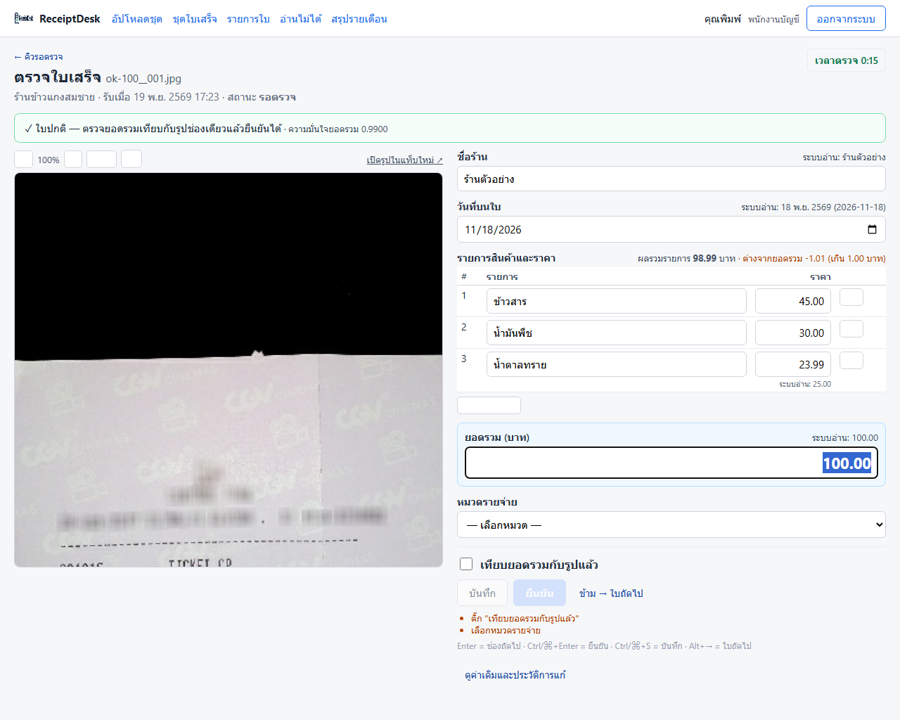
① after edit 23.99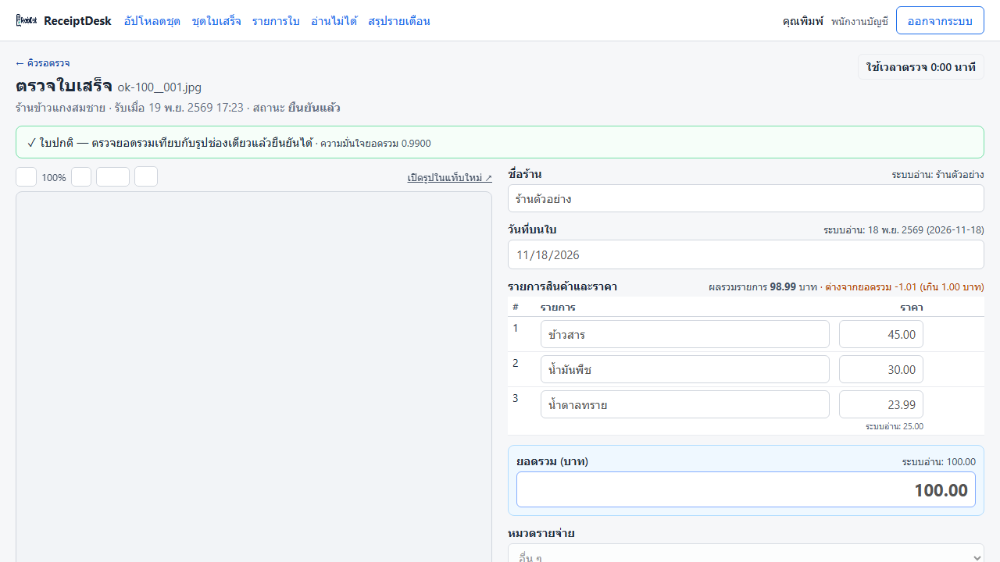
③ confirmed __001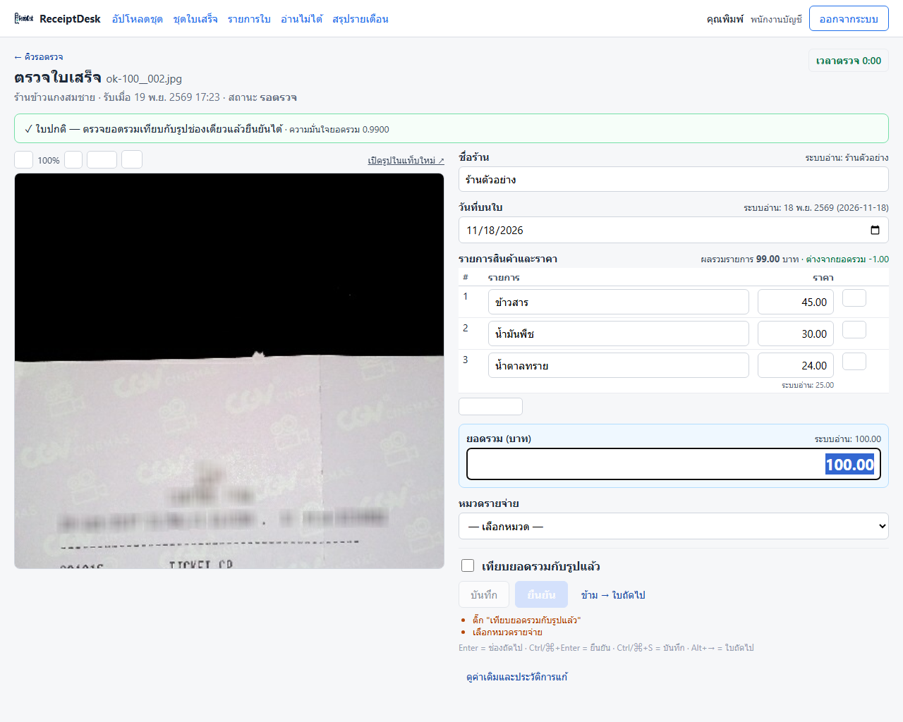
④ after edit 24.00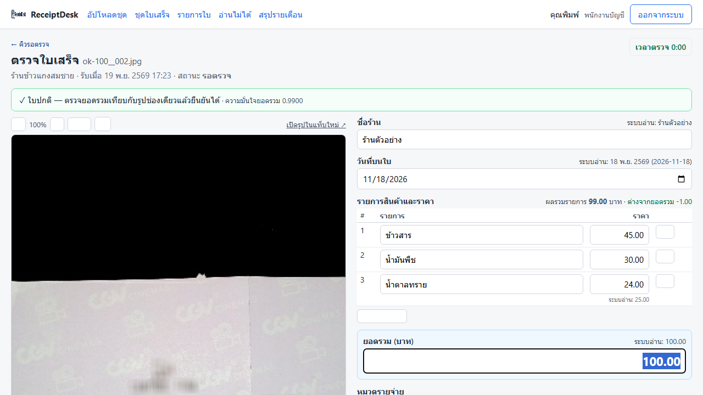
screenshot- ① W14 line3 23.99 application/json
- ① W12 application/json
- ② W15 by U-02 not opened application/json
- ③ W12 application/json
- ④ W14 line3 24.00 application/json
- ④ W12 application/json
- error-context text/markdown
- trace application/zip · เปิดด้วย npx playwright show-trace
ล้ม TC-3-08 หลังยืนยัน พนักงานแก้ไม่ได้ หัวหน้าเปิดกลับได้ P2M เว็บผิด
ผลที่คาดหวัง (แผน): ① ② ถูกปฏิเสธ (`403`) ยอดยังเป็น 100.00 · ③ สถานะกลับเป็น "รอตรวจ" · ประวัติมีแถวยืนยันโดยคุณพิมพ์และแถวเปิดกลับโดยคุณกิตติ พร้อมเวลา
ที่มา: A-15 · FR-13 · NFR-10 · เวลา 19.5 วินาที · รอบ: round1: failed
คัดแยก: พนักงาน PATCH ใบที่ยืนยันแล้วได้ 409 not_editable แทน 403 ตามตาราง error ของ DESIGN 9.2 · ยอดยังเป็น 100.00 (ข้อมูลไม่เสีย) · reopen ทำงานถูก
ข้อความที่ล้ม
Error: ① PATCH after confirm must be 403
expect(received).toBe(expected) // Object.is equality
Expected: 403
Received: 409
463 | const p1j = await p1.json().catch(() => ({}));
464 | await evidence(testInfo, '① PATCH by U-01', { status: p1.status(), json: p1j });
> 465 | expect.soft(p1.status(), '① PATCH after confirm must be 403').toBe(403);
| ^
466 | let r = await getR(u01, id);
467 | expect.soft(money(r.total), '① total stays 100.00').toBe(10000);
468 |
at C:\Users\oishi\Documents\GitHub\CWN\Teaching\03_week03\04_Agent_Team_End_to_End\02_receipt_desk\test\e2e\tests\53-review.spec.ts:465:67- confirm by U-01 application/json
- ① PATCH by U-01 application/json
- ② reopen by U-01 application/json
- ③ reopen by U-03 application/json
- ③ W17 application/json
- error-context text/markdown
- trace application/zip · เปิดด้วย npx playwright show-trace
5.4 งานด่วน ผ่าน 5 · ล้ม 2 · บล็อก 1
ล้ม TC-4-01 ชุด 9 และ 10 ใบ ตั้งด่วนได้ · ชุดที่อ่านเสร็จแล้วตั้งไม่ได้ P2A เว็บผิด
ผลที่คาดหวัง (แผน): ชุด 9 และ 10: `batch-priority` = ด่วน (9 ≤ 10 · 10 ≤ 10) · ตัวนับงานด่วนวันนี้ 0 → 1 → 2 · ชุดที่อ่านเสร็จแล้ว: ไม่ถูกตั้งเป็นด่วน ตัวนับยังเป็น 2 (FR-18 ให้ตั้งกับชุดที่ยังอ่านไม่เสร็จเท่านั้น)
ที่มา: FR-18 · BR-08 · TD-BR08-a, b · เวลา 378.0 วินาที · รอบ: round1: failed
คัดแยก: ชุดที่อ่านเสร็จทุกใบแล้วยังตั้งด่วนได้ (200) และกินโควตา ตัวนับ 2 → 3 · FR-18 ให้ตั้งกับชุดที่ยังอ่านไม่เสร็จเท่านั้น
ข้อความที่ล้ม
Error: ชุดที่อ่านเสร็จแล้ว ไม่ถูกตั้งเป็นด่วน (FR-18)
expect(received).toBe(expected) // Object.is equality
Expected: "normal"
Received: "urgent"
110 | await shot(testInfo, page, 'ชุดที่อ่านเสร็จแล้ว หลังกดงานด่วน');
111 | const after = await batchOf(lead, b3.json.batchId);
> 112 | expect.soft(after.batch.priority, 'ชุดที่อ่านเสร็จแล้ว ไม่ถูกตั้งเป็นด่วน (FR-18)').toBe('normal');
| ^
113 | await expect.soft(page.getByTestId('batch-priority'), 'batch-priority ของชุดที่อ่านเสร็จแล้ว ไม่ใช่ด่วน').not.toContainText('ด่วน');
114 | expect.soft(await usedToday(lead), 'ตัวนับยังเป็น 2').toBe(2);
115 | await evidence(testInfo, 'W23 ตอนจบ', await queue(lead));
at C:\Users\oishi\Documents\GitHub\CWN\Teaching\03_week03\04_Agent_Team_End_to_End\02_receipt_desk\test\e2e\tests\54-urgent.spec.ts:112:89Error: batch-priority ของชุดที่อ่านเสร็จแล้ว ไม่ใช่ด่วน
expect(locator).not.toContainText(expected) failed
Locator: getByTestId('batch-priority')
Expected substring: not "ด่วน"
Received string: "ด่วน"
Timeout: 15000ms
Call log:
- batch-priority ของชุดที่อ่านเสร็จแล้ว ไม่ใช่ด่วน getByTestId('batch-priority') with timeout 15000ms
- waiting for getByTestId('batch-priority')
33 × locator resolved to <span class="badge urgent" data-priority="urgent" data-testid="batch-priority">ด่วน</span>
- unexpected value "ด่วน"
111 | const after = await batchOf(lead, b3.json.batchId);
112 | expect.soft(after.batch.priority, 'ชุดที่อ่านเสร็จแล้ว ไม่ถูกตั้งเป็นด่วน (FR-18)').toBe('normal');
> 113 | await expect.soft(page.getByTestId('batch-priority'), 'batch-priority ของชุดที่อ่านเสร็จแล้ว ไม่ใช่ด่วน').not.toContainText('ด่วน');
| ^
114 | expect.soft(await usedToday(lead), 'ตัวนับยังเป็น 2').toBe(2);
115 | await evidence(testInfo, 'W23 ตอนจบ', await queue(lead));
116 | } finally {
at C:\Users\oishi\Documents\GitHub\CWN\Teaching\03_week03\04_Agent_Team_End_to_End\02_receipt_desk\test\e2e\tests\54-urgent.spec.ts:113:115Error: ตัวนับยังเป็น 2
expect(received).toBe(expected) // Object.is equality
Expected: 2
Received: 3
112 | expect.soft(after.batch.priority, 'ชุดที่อ่านเสร็จแล้ว ไม่ถูกตั้งเป็นด่วน (FR-18)').toBe('normal');
113 | await expect.soft(page.getByTestId('batch-priority'), 'batch-priority ของชุดที่อ่านเสร็จแล้ว ไม่ใช่ด่วน').not.toContainText('ด่วน');
> 114 | expect.soft(await usedToday(lead), 'ตัวนับยังเป็น 2').toBe(2);
| ^
115 | await evidence(testInfo, 'W23 ตอนจบ', await queue(lead));
116 | } finally {
117 | await context.close();
at C:\Users\oishi\Documents\GitHub\CWN\Teaching\03_week03\04_Agent_Team_End_to_End\02_receipt_desk\test\e2e\tests\54-urgent.spec.ts:114:59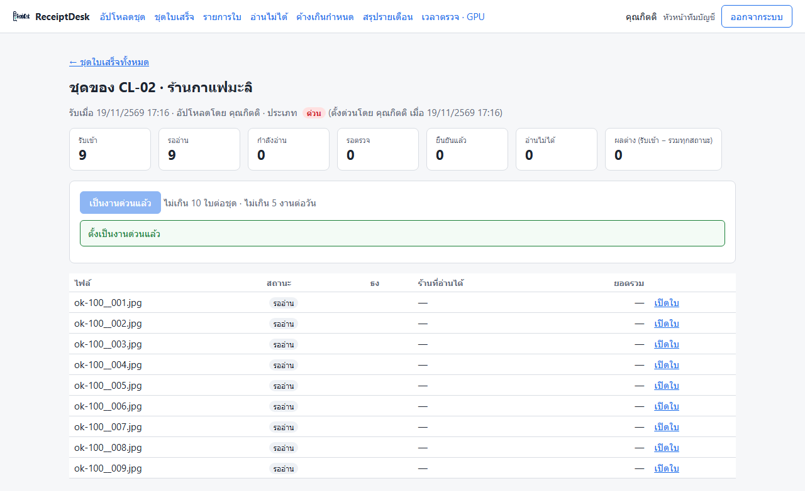
ชุด 9 ใบ หลังกดงานด่วน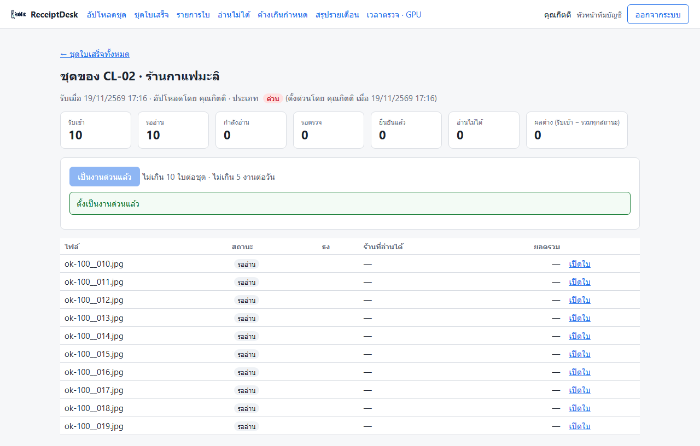
ชุด 10 ใบ หลังกดงานด่วน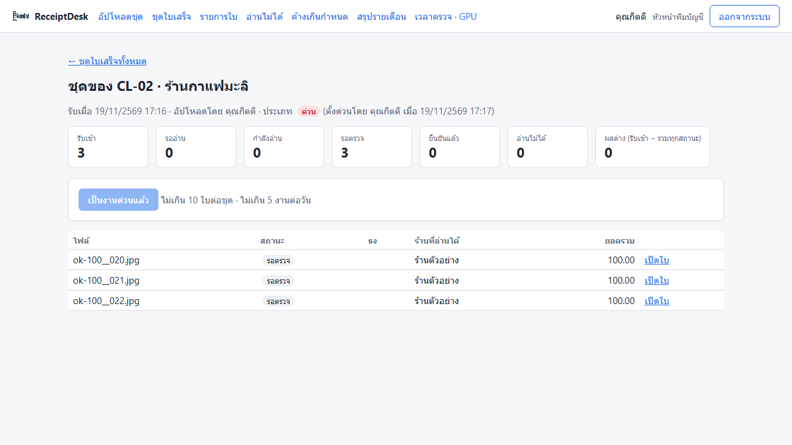
ชุดที่อ่านเสร็จแล้ว หลังกดงานด่วน screenshot
screenshot- W10 ชุด 9 ใบ application/json
- W10 ชุด 10 ใบ application/json
- W10 ชุดที่อ่านเสร็จแล้ว application/json
- W23 ตอนจบ application/json
- error-context text/markdown
- trace application/zip · เปิดด้วย npx playwright show-trace
ผ่าน TC-4-02 ชุด 11 ใบ ตั้งด่วนไม่ได้ P1A
ผลที่คาดหวัง (แผน): ① `422 urgent_too_large` · ชุดยังเป็นงานปกติ รับไว้ 11 ใบ · ตัวนับด่วนวันนี้ยังเป็น 0 · ② จำนวนใบใหม่ = 0 หรือ 11 เท่านั้น (ห้ามรับครึ่งชุด) · ถ้า 11 ทุกใบเป็นงานปกติ · ตัวนับด่วนยังเป็น 0 · แบบใดถูกต้องตัดสินตาม AP-02
ที่มา: FR-18 · FR-23 · BR-08 · TD-BR08-c · AP-02 · เวลา 3.8 วินาที · รอบ: round1: passed
- AP AP-02: W7 11 ไฟล์ urgent=true → HTTP 422 urgent_too_large · ใบใหม่ 0 ใบ (ปฏิเสธทั้งชุด)
- ① W10 ชุด 11 ใบ application/json
- ② W7 11 ไฟล์ urgent=true application/json
- ② ใบใหม่ application/json
ผ่าน TC-4-03 โควตาวันนี้ใช้ไป 4 → งานที่ 5 ได้ P2A
ผลที่คาดหวัง (แผน): ตั้งได้ · ตัวนับ 4 + 1 = 5 / 5
ที่มา: FR-18 · BR-09 · TD-BR09-a · เวลา 1.0 วินาที · รอบ: round1: passed
- W7 5 ไฟล์ urgent=true application/json
- W23 หลังตั้ง application/json
ผ่าน TC-4-04 โควตาครบ 5 → งานที่ 6 ไม่ได้ ทุกช่องทาง P1A
ผลที่คาดหวัง (แผน): ① (ก) (ข) `409 urgent_quota` · ตัวนับยังเป็น 5 / 5 · ② 3 + 2 = 5 ตั้งได้ครบ · งานที่ 6 ทั้ง 2 ช่องทาง `409 urgent_quota` · ตัวนับ 5 / 5 (โควตาเป็นของทั้งสำนักงาน นับรวมทุกช่องทาง · การทดสอบด้วยหัวหน้า 2 คนรอ AP-05)
ที่มา: FR-18 · BR-09 · TD-BR09-b · AP-05 · เวลา 8.0 วินาที · รอบ: round1: passed
- AP AP-05: โควตาทั้งสำนักงานทดสอบด้วยหัวหน้าคนเดียว (U-03) ผ่าน 2 ช่องทาง · การทดสอบด้วยหัวหน้า 2 คนรอ U-07
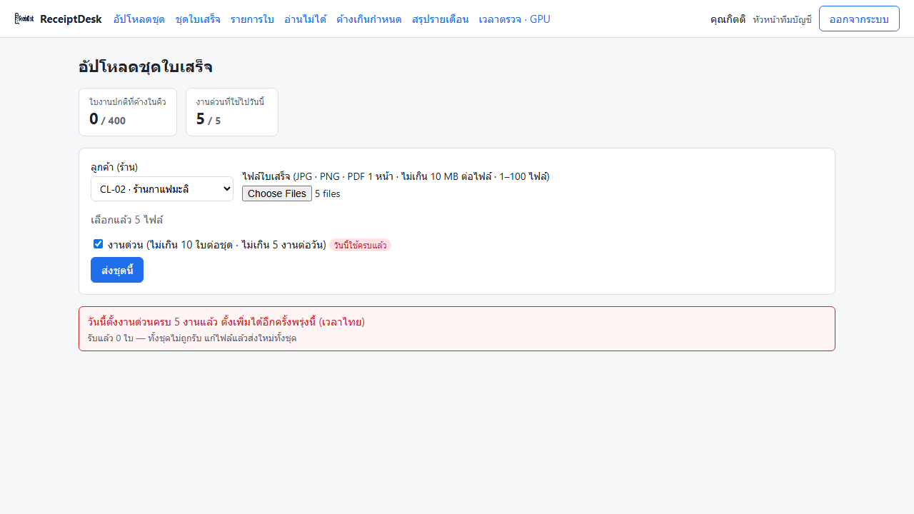
① (ก) อัปโหลดติ๊กด่วน งานที่ 6① (ข) กดปุ่มด่วน งานที่ 6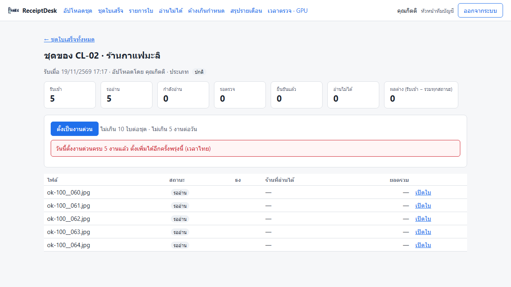
② งานที่ 6 กดปุ่มด่วน- ① (ก) W7 urgent=true application/json
- ① (ข) W10 application/json
- ② ลำดับการตั้งด่วน application/json
ผ่าน TC-4-05 วันใหม่เริ่มนับ 0 P2A
ผลที่คาดหวัง (แผน): ตั้งได้ · ตัวนับวันนี้ 0 + 1 = 1 · งานเมื่อวาน 23:59 ไม่ถูกนับในวันนี้ (วันปฏิทินเวลาไทย)
ที่มา: BR-09 · A-08 · TD-BR09-c · เวลา 1.0 วินาที · รอบ: round1: passed

- W23 ก่อนเริ่ม application/json
- W7 5 ไฟล์ urgent=true application/json
ผ่าน TC-4-06 งานด่วนไม่ติดเพดานคิว P1A
ผลที่คาดหวัง (แผน): ① รับ 10 · ใบงานปกติค้าง (W23) ยังเป็น 400 · ② 400 + 1 = 401 > 400 → `429 queue_full` · N = ปัดขึ้น(1 ÷ 8) = 1 นาที
ที่มา: BR-11 · BR-12 · FR-22 · TD-BR11-e · เวลา 1.0 วินาที · รอบ: round1: passed
- ① W7 10 ไฟล์ urgent=true application/json
- ① W23 application/json
- ② W7 1 ไฟล์ปกติ application/json
บล็อก TC-4-07 งานด่วน 10 ใบมีผลภายใน 5 นาที (smoke ของ NFR-03) P1R
ผลที่คาดหวัง (แผน): ทั้ง 2 รอบ: ใบด่วนทั้ง 10 มีผล ≤ t0 + 300 วินาที · เพดานทางทฤษฎีของรอบ ข: Worker 1 ตัว 4 ใบ/นาที สลับ 4:1 → ใบด่วน 4 × 4/5 = 3.2 ใบ/นาที → 10 ÷ 3.2 = 3.125 นาที = 187.5 วินาที < 300 วินาที · ใบปกติ 40 ใบมีผลครบภายใน 120 นาทีจากรับแล้ว (BR-13) · จบด้วย `workersAlive` = 2 · ผลนี้ไม่ใช่การรับรอง NFR-03 (หัวข้อ 2.2)
ที่มา: NFR-03 (smoke) · FR-20 · BR-13 · เวลา 5.1 วินาที · รอบ: round1: skipped
- blocked รอบปล่อยรุ่น ★: ต้องใช้ใบจริง 100 ไฟล์ เกินงบรอบปกติ/งบของขั้นนี้ (120 ใบ) และต้องได้อนุมัติหัวหน้าทีมทดสอบ
- skip รอบปล่อยรุ่น ★ เท่านั้น (2 × 50 ไฟล์จริง ต้องได้อนุมัติหัวหน้าทีมทดสอบ)
ล้ม TC-4-08 ลำดับอ่าน 4:1 ครบ 4 รูปคิว P2R เว็บผิด
ผลที่คาดหวัง (แผน): a ด่วน 3 · ปกติ 2 → U1 U2 U3 N1 N2 · b ด่วน 4 · ปกติ 2 → U1 U2 U3 U4 N1 N2 · c ด่วน 5 · ปกติ 2 → U1 U2 U3 U4 N1 U5 N2 (ห้ามด่วนติดกัน 5 ขณะมีปกติรอ) · d ด่วน 5 · ปกติ 0 → U1 U2 U3 U4 U5 (ไม่มีปกติรอ ไม่ต้องสลับ) · ใบที่กำลังอ่านอยู่ไม่ถูกขัดจังหวะ (ทุก ID มีเหตุการณ์หยิบ 1 ครั้งและผล 1 ครั้ง) · จบด้วย `workersAlive` = 2
ที่มา: FR-20 · BR-10 · TD-BR10-a – d · เวลา 156.8 วินาที · รอบ: round1: failed → round2: failed
คัดแยก: รอบ 1 เทสต์ผิด: ตั้งป้าย U1..N2 ตามลำดับอัปโหลด ไม่ใช่ลำดับเข้าคิวที่ gateway → แก้ให้ตัดสินจากรูปแบบด่วน/ปกติตาม BR-10 · รอบ 1 รูปแบบถูกทั้ง 4 รูปคิว แต่รอบ 2 รูปคิว a ได้ U N U U N (หยิบใบปกติทั้งที่ใบด่วนรออยู่ 2 ใบ) b c d ถูก → ลำดับความสำคัญไม่คงที่ (เกิด 1 ใน 8 ครั้ง)
- note E6: คิวที่ gateway (GET /v1/queue) เรียกจากเครื่องทดสอบไม่ได้ จึงไม่ได้ตรวจในสเปกนี้
- info a: ลำดับหยิบ (ป้ายตามลำดับอัปโหลด) U1 N2 U2 U3 N1 · รูปแบบ U N U U N · คาด U U U N N
- info b: ลำดับหยิบ (ป้ายตามลำดับอัปโหลด) U4 U1 U3 U2 N1 N2 · รูปแบบ U U U U N N · คาด U U U U N N
- info c: ลำดับหยิบ (ป้ายตามลำดับอัปโหลด) U3 U5 U1 U2 N2 U4 N1 · รูปแบบ U U U U N U N · คาด U U U U N U N
- info d: ลำดับหยิบ (ป้ายตามลำดับอัปโหลด) U3 U5 U1 U4 U2 · รูปแบบ U U U U U · คาด U U U U U
ข้อความที่ล้ม
Error: a ⑤ ลำดับอ่าน (รูปแบบด่วน/ปกติ ตาม BR-10)
expect(received).toBe(expected) // Object.is equality
Expected: "U U U N N"
Received: "U N U U N"
501 | const expectedPattern = s.expected.map((l: string) => l[0]).join(' ');
502 | testInfo.annotations.push({ type: 'info', description: `${s.key}: ลำดับหยิบ (ป้ายตามลำดับอัปโหลด) ${order.join(' ')} · รูปแบบ ${pattern} · คาด ${expectedPattern}` });
> 503 | expect.soft(pattern, `${s.key} ⑤ ลำดับอ่าน (รูปแบบด่วน/ปกติ ตาม BR-10)`).toBe(expectedPattern);
| ^
504 | expect.soft(perId.filter(p => p.go !== 1 || p.read !== 1).map(p => `${p.label}: go=${p.go} read=${p.read}`), `${s.key} ทุก ID หยิบ 1 ครั้งและผล 1 ครั้ง`).toEqual([]);
505 | expect.soft(perId.filter(p => p.queues.some(qq => qq !== (p.label.startsWith('U') ? 'urgent' : 'normal'))).map(p => `${p.label}: ${p.queues}`), `${s.key} ใบ U มาจาก queue=urgent · ใบ N มาจาก queue=normal`).toEqual([]);
506 | }
at C:\Users\oishi\Documents\GitHub\CWN\Teaching\03_week03\04_Agent_Team_End_to_End\02_receipt_desk\test\e2e\tests\54-urgent.spec.ts:503:80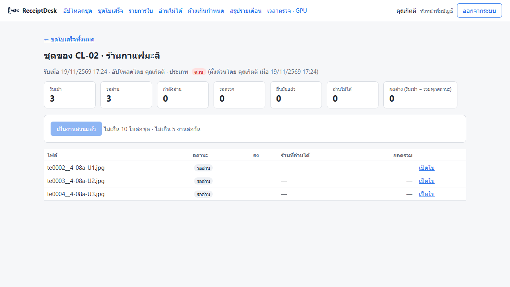
a ③ ชุดด่วนรออ่านก่อนเปิด worker0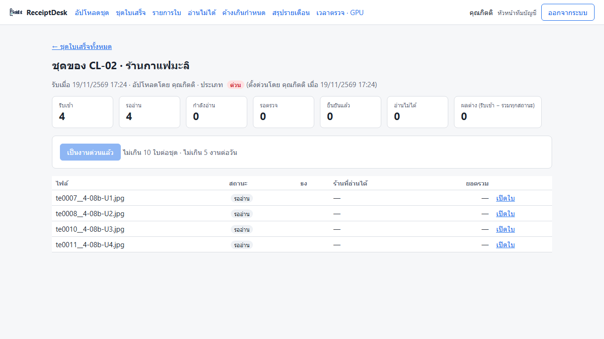
b ③ ชุดด่วนรออ่านก่อนเปิด worker0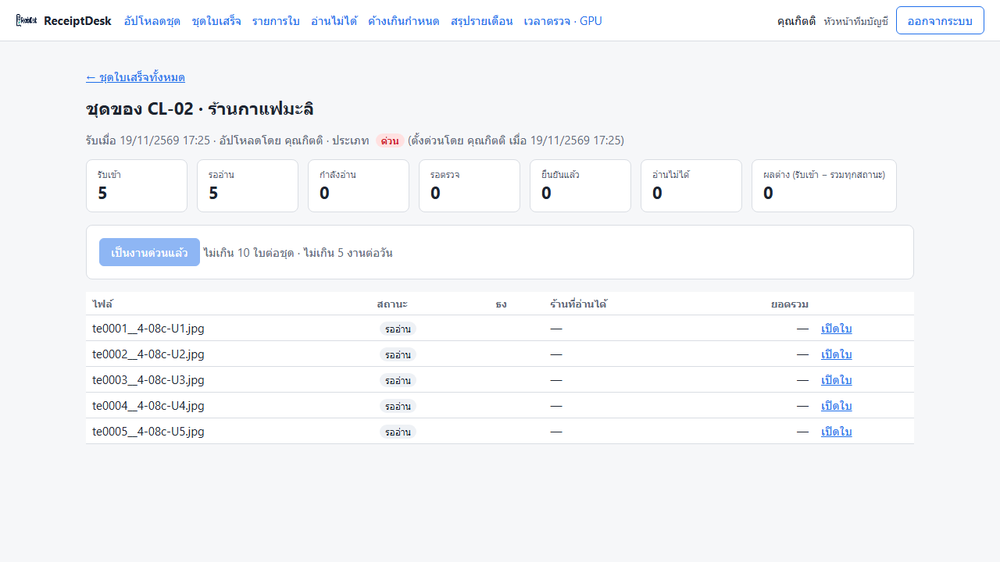
c ③ ชุดด่วนรออ่านก่อนเปิด worker0d ③ ชุดด่วนรออ่านก่อนเปิด worker0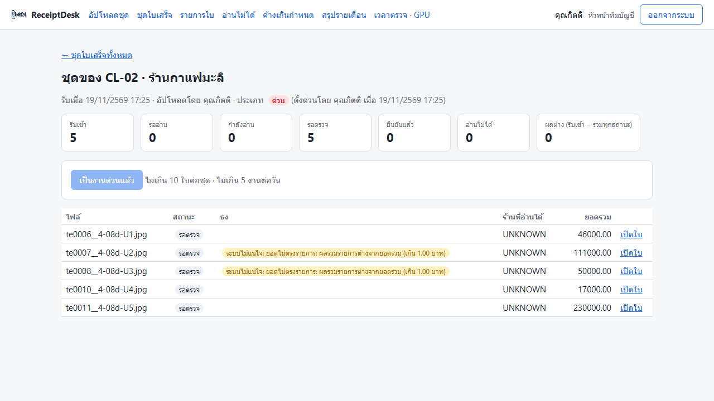
screenshot- E6 W23 หลังรีเซ็ต application/json
- a ① stop text/plain
- a ② W7 ชุดด่วน application/json
- a ③ W23 + W9 ก่อนเปิด worker0 application/json
- a ④ start worker0 text/plain
- a ⑤ ลำดับหยิบงานจาก log worker0 application/json
- a ⑤ log worker0 (tail 40) text/plain
- b ① stop text/plain
- b ② W7 ชุดด่วน application/json
- b ③ W23 + W9 ก่อนเปิด worker0 application/json
- b ④ start worker0 text/plain
- b ⑤ ลำดับหยิบงานจาก log worker0 application/json
- b ⑤ log worker0 (tail 40) text/plain
- c ① stop text/plain
- c ② W7 ชุดด่วน application/json
- c ③ W23 + W9 ก่อนเปิด worker0 application/json
- c ④ start worker0 text/plain
- c ⑤ ลำดับหยิบงานจาก log worker0 application/json
- c ⑤ log worker0 (tail 40) text/plain
- d ① stop text/plain
- d ② W7 ชุดด่วน application/json
- d ③ W23 + W9 ก่อนเปิด worker0 application/json
- d ④ start worker0 text/plain
- d ⑤ ลำดับหยิบงานจาก log worker0 application/json
- d ⑤ log worker0 (tail 40) text/plain
- สรุปลำดับทุกรูปคิว application/json
- จบ: start worker0 worker1 text/plain
- error-context text/markdown
- trace application/zip · เปิดด้วย npx playwright show-trace
5.5 สถานะงานในคิวและใบที่อ่านไม่ได้ ผ่าน 9 · ล้ม 0 · บล็อก 1
ผ่าน TC-5-01 ค้าง + ใหม่ ≤ 400 รับ P2A
ผลที่คาดหวัง (แผน): ① 299 + 100 = 399 ≤ 400 รับ 100 · ค้าง 399 · ② 300 + 100 = 400 รับ 100 · ค้าง 400 · ③ 395 + 5 = 400 รับ 5 · ค้าง 400
ที่มา: FR-22 · BR-11 · TD-BR11-a, b, d · เวลา 7.6 วินาที · รอบ: round1: passed
- ① 299 + 100 W7 response application/json
- ① 299 + 100 W23 application/json
- ② 300 + 100 W7 response application/json
- ② 300 + 100 W23 application/json
- ③ 395 + 5 W7 response application/json
- ③ 395 + 5 W23 application/json
ผ่าน TC-5-02 ค้าง + ใหม่ > 400 ไม่รับทั้งชุด P1A
ผลที่คาดหวัง (แผน): 301 + 100 = 401 > 400 → `429 queue_full` · `upload-full-message` = "ตอนนี้ระบบเต็ม กรุณาลองใหม่ในอีก 1 นาที" (เกิน 1 ÷ 8 → 1) · รับ 0 ใบ · ค้างยังเป็น 301 · ยอดรับเข้าเท่าก่อนส่ง · ใบตั้งต้น 8 ใบสถานะไม่เปลี่ยน
ที่มา: FR-22 · FR-23 · BR-11 · BR-12 · TD-BR11-c · เวลา 1.6 วินาที · รอบ: round1: passed
- W20 before application/json
- S-01..S-08 before application/json
- W7 response (page) application/json
- W23 after application/json
- W20 after application/json
- S-01..S-08 after application/json
ผ่าน TC-5-03 นาทีให้ลองใหม่ตามจำนวน Worker P2A
ผลที่คาดหวัง (แผน): Worker 2 (อัตรา 8): ค้าง 307 → เกิน 7 → 1 · 308 → 8 → 1 · 309 → 9 → ปัดขึ้น 1.125 = 2 · 380 → 80 → 10 · 400 → 100 → ปัดขึ้น 12.5 = 13 · Worker 1 (อัตรา 4): 309 → 9 ÷ 4 = 2.25 → 3 · Worker 0 (ใช้ 1 ตัว): 380 → 80 ÷ 4 = 20 · ทุกแถวรับ 0 ใบ · หน้าเว็บแสดงเลขเดียวกับ API
ที่มา: FR-22 · BR-12 · TD-BR12-b – h · เวลา 8.9 วินาที · รอบ: round1: passed
- TD-BR12-b..h results application/json
ผ่าน TC-5-04 ออกจากหน้าแล้วกลับมาเห็นสถานะ และยอดตรวจนับ P1M
ผลที่คาดหวัง (แผน): ① ชุด: รับเข้า 5 = รออ่าน 5 · ทั้งสำนักงาน 8 + 5 = 13 = ยืนยันแล้ว 7 + รอตรวจ 1 + รออ่าน 5 · ผลต่าง 0 · ③ ชุด: 5 = รอตรวจ 4 + อ่านไม่ได้ 1 · สถานะรายใบตรงตาม ID (ok-100 ×3 และ conf-089 = รอตรวจ · fail3 = อ่านไม่ได้) · ทั้งสำนักงาน 13 = ยืนยันแล้ว 7 + รอตรวจ (1 + 4) 5 + อ่านไม่ได้ 1 · `reconcile-diff` = 0 ทั้งรายชุดและทั้งสำนักงาน
ที่มา: FR-06 · FR-07 · FR-08 · NFR-06 · เวลา 20.5 วินาที · รอบ: round1: passed
- W7 response (page) application/json
- ① W20 office application/json
- ② statuses application/json
- ③ W20 office application/json
- ③ W20 batch application/json
- ③ W9 batch application/json
ผ่าน TC-5-05 อ่านซ้ำไม่เกิน 3 ครั้ง P1M
ผลที่คาดหวัง (แผน): fail1 → รอตรวจ · attempts 1 + 1 = 2 · fail2 → รอตรวจ · attempts 2 + 1 = 3 · fail3 → อ่านไม่ได้ · attempts = 3 พอดี (ไม่มีครั้งที่ 4) · ประวัติของ fail3 มีการลองอ่าน 3 ครั้งพร้อมเวลา (NFR-10) · อยู่ใน `/unreadable` เหตุผลบอกว่าอ่านไม่สำเร็จ ไม่ใช่ "ไม่พบไฟล์รูป" ในเมื่อ W13 ส่งรูปได้ (`200`) · หลังรอ 2 นาทีสถานะไม่กลับเป็นรออ่าน
ที่มา: FR-16 · BR-07 · NFR-10 · TD-BR07-a, b, c · เวลา 697.1 วินาที · รอบ: round1: passed
- W7 response application/json
- W12 when all have a result application/json
- W12 after +2 min application/json
- W17 fail3 application/json
- W17 fail1-then-ok.jpg application/json
- W17 fail2-then-ok.jpg application/json
- unreadable-reason text text/plain
ผ่าน TC-5-06 พิมพ์ 5 ช่องเองให้ใบอ่านไม่ได้ P1M
ผลที่คาดหวัง (แผน): ① `422 total_invalid` (0.00 < 0.01) · ② ผลรวมรายการ 30.00 + 25.50 = 55.50 ผลต่าง 0 · ยืนยันได้ · สถานะยืนยันแล้ว · ใบหายจากรายการ `/unreadable` (นับ 1 → 0) · ③ ค่าที่เก็บตรงที่พิมพ์ครบ 5 ช่อง (ร้าน วันที่ 2 รายการพร้อมราคา ยอด 55.50)
ที่มา: FR-17 · FR-12 · BR-06 · เวลา 20.5 วินาที · รอบ: round1: passed

- ① W14 save total 0.00 application/json
- ① page blocked confirm (confirm-blockers) text/plain
- ① W15 confirm with total 0.00 application/json
- ② W14 save total 55.50 application/json
- ② W15 confirm application/json
- ③ W12 application/json
ผ่าน TC-5-07 ค้างเกิน 120 นาที P2A เทสต์ผิด → แก้แล้ว
ผลที่คาดหวัง (แผน): ② รายการมี 1 ใบ (TD-BR13-c) · `overdue-minutes` = 121 · ใบ 119 และ 120 นาทีไม่อยู่ (119 < 120 · 120 ไม่เกิน 120 ตามนาทีเต็มที่ AP-04) · ใบ 121 นาทีที่มีผลแล้วไม่อยู่ · หัวหน้าเห็นการแจ้ง · ③ U-01 ถูกปฏิเสธ (FR-21 แจ้งหัวหน้าทีม) · กรณีใบด่วนอายุเกิน 120 นาทีรอข้อมูลตาม AP-05
ที่มา: FR-21 · BR-13 · TD-BR13-a – d · AP-04 · เวลา 26.3 วินาที · รอบ: round1: failed → round2: passed
คัดแยก: รอบ 1 เทสต์ผิด: นับใบ 120 นาทีที่เกินเพียงเศษวินาทีเป็นผลล้ม ทั้งที่แผน AP-04 ให้ 'บันทึกแยก ไม่ใช้ตัดสิน' → แก้เป็นบันทึกรอตัดสิน · รอบ 2 ผ่าน (ใบ 121 นาทีอยู่ · 119 และ 121-รอตรวจไม่อยู่ · U-01 ถูกปฏิเสธ) · ใบ 120 นาทีแสดงในรายการ = รอตัดสิน AP-04
- รอตัดสิน AP-04: ใบ TD-BR13-b (120 นาที + เศษวินาที) อยู่ในรายการ แสดง 120 นาที · overdue-count=2
- AP AP-04: ตรวจที่ 0 s หลังรีเซ็ต · overdue-count=2 · แถว={"b35b3cf4-f79f-4b08-9f50-21579963db7f":"121","ac9c2517-d20f-46e4-96b8-effda61ad4f2":"120"} · ใบ 120 นาที อยู่ในรายการ
- AP AP-05: ไม่มีใบด่วนอายุเกิน 120 นาทีในข้อมูลรีเซ็ต · กรณีใบด่วนรอข้อมูลเพิ่มใน TEST-DATA
- ① W11 receipts made by reset {overdue:true} application/json
- ② nav-overdue text (U-03) text/plain
- ② /overdue application/json
- ③ U-01 url after /overdue text/plain
บล็อก TC-5-08 ดับ Worker ที่กำลังถือใบกลางงาน 100 ใบ P1R
ผลที่คาดหวัง (แผน): ใบหาย 0: ทั้ง 100 ID มีอยู่และรับเข้า 100 = ผลรวมทุกสถานะ 100 · ทุก ID มีผลอ่านบันทึก 1 ครั้งพอดี (ผลซ้ำ 0) · ใบที่ถูกถืออยู่ตอนดับมีเหตุการณ์กลับเป็นรออ่านแล้วถูกอ่านใหม่ · Worker ที่เหลืออ่านต่อจนครบ 100 · จบด้วย `workersAlive` = 2
ที่มา: NFR-06 · FR-08 · เวลา 0.0 วินาที · รอบ: round1: skipped
- blocked รอบปล่อยรุ่น ★: ต้องใช้ใบจริง 100 ไฟล์ เกินงบรอบปกติ/งบของขั้นนี้ (120 ใบ) และต้องได้อนุมัติหัวหน้าทีมทดสอบ
- skip รอบปล่อยรุ่น ★ เท่านั้น (ใบจริง 100 ไฟล์ · ต้องอนุมัติหัวหน้าทีมทดสอบ)
ผ่าน TC-5-09 ฝั่ง AI ล่มทั้งหมด แล้วกลับมา P1R เทสต์ผิด → แก้แล้ว
ผลที่คาดหวัง (แผน): ② เว็บยังเปิดทุกหน้า · `/api/health` 200 (`ai.reachable` = false ได้) · รับ 3 ใบ · ทั้ง 3 ID คงสถานะ "รออ่าน" · ยอดตรวจนับผลต่าง 0 · ③ ทั้ง 3 ใบถูกอ่านต่อเองจนมีผล โดยไม่มีใครกดอะไร · `workersAlive` = 2
ที่มา: NFR-06 ข้อ 5 · FR-06 · เวลา 354.8 วินาที · รอบ: round1: failed → round2: passed
คัดแยก: รอบ 1 ล้มเพราะไฟล์ trace ชนกันจากการรันซ้อน (ปัญหาการรันของผู้ทดสอบ ไม่ใช่เว็บ) · รอบ 2 ผ่าน: gateway ดับ 3 นาที ใบค้างรออ่าน ผลต่าง 0 แล้วอ่านต่อเองครบ
- E6 W23 application/json
- E6 gpu.sh status all text/plain
- ① gpu.sh stop gateway text/plain
- ② W7 response application/json
- ② /api/health while gateway is down application/json
- ② statuses after 3 min application/json
- ② W20 application/json
- ③ gpu.sh start gateway text/plain
- ③ results application/json
- ③ /api/health ai.workersAlive application/json
- ③ W20 application/json
ผ่าน TC-5-10 ปิดแล้วเปิดคิวและฐานข้อมูลใหม่กลางงาน P1A เทสต์ผิด → แก้แล้ว
ผลที่คาดหวัง (แผน): ทั้ง 20 ID มีอยู่ · ทุกใบมีผล "รอตรวจ" 1 ครั้ง · รับเข้า 8 + 20 = 28 = ผลรวมทุกสถานะ · ผลต่าง 0 · ใบหาย 0
ที่มา: NFR-06 ข้อ 4 · FR-08 · เวลา 11.0 วินาที · รอบ: round1: failed → round2: passed
คัดแยก: รอบ 1 เทสต์ผิด: เริ่ม restart หลังตัวอ่านจำลองอ่านครบ 20 ใบแล้ว จึงไม่ใช่ 'กลางงาน' → แก้ให้สั่ง restart ทันทีที่มีผลใบแรก · รอบ 2 ผ่าน: ใบหาย 0 ทุกใบมีผล 1 ครั้ง 28 = 28
- W7 response application/json
- batch counts when the restart starts application/json
- final statuses application/json
- W17: number of "review" results per receipt application/json
- W20 at the end application/json
5.6 รายงานรายเดือน ผ่าน 6 · ล้ม 1 · บล็อก 0
ผ่าน TC-6-01 สรุป พ.ย. 2026 ของ CL-01 P1A
ผลที่คาดหวัง (แผน): S-02 + S-03 + S-04 + S-07 = 200.50 + 99.50 + 1,000.00 + 40.00 = **1,340.00 บาท · 4 ใบ** · ไม่มี S-06 (500.00 ยังไม่ยืนยัน) · มี S-07 (วันที่บนใบ 2026-11-10 แม้อัปโหลด 2026-12-02) · ผลรวมคอลัมน์ยอดใน CSV = 1,340.00
ที่มา: FR-28 · BR-14 · E-02 · TD-BR14-b, c, d · เวลา 1.5 วินาที · รอบ: round1: passed

- CL-01 2026-11.csv text/csv
- CL-01 2026-11 report application/json
ผ่าน TC-6-02 ใบที่ขอบเดือน ต.ค. / ธ.ค. P1A
ผลที่คาดหวัง (แผน): ต.ค. = S-01 = **150.00 · 1 ใบ** (2026-10-31 ก่อนวันที่ 1) · ธ.ค. = S-05 = **75.25 · 1 ใบ** (2026-12-01) · S-05 ไม่อยู่ใน พ.ย.
ที่มา: BR-14 · E-01 · E-03 · TD-BR14-a, e · เวลา 2.4 วินาที · รอบ: round1: passed
- CL-01 2026-10.csv text/csv
- CL-01 2026-10 report application/json
- CL-01 2026-12.csv text/csv
- CL-01 2026-12 report application/json
- CL-01 2026-11.csv text/csv
- CL-01 2026-11 report application/json
ผ่าน TC-6-03 ร้านอื่น และร้านที่ไม่มีใบ P2A
ผลที่คาดหวัง (แผน): CL-02 = S-08 = **999.00 · 1 ใบ** · CL-03 = **0.00 · 0 ใบ** ได้ไฟล์ CSV ที่มีแต่หัวตาราง (ไม่ error) · ไม่มีใบของ CL-01 ปน
ที่มา: FR-28 · E-04 · E-06 · เวลา 1.8 วินาที · รอบ: round1: passed
- CL-02 2026-11.csv text/csv
- CL-02 2026-11 report application/json
- CL-03 2026-11.csv text/csv
- CL-03 2026-11 report application/json
- W18 CL-03 2026-11 (API) application/json
ผ่าน TC-6-04 ใบที่ยืนยันใหม่เข้าเดือนตามวันที่บนใบ P2M
ผลที่คาดหวัง (แผน): พ.ย. = 1,340.00 + 100.00 = **1,440.00 · 5 ใบ** · ธ.ค. = 75.25 + 100.00 = **175.25 · 2 ใบ** · ใบสองนับตามวันที่ที่แก้แล้ว (2026-12-01) ไม่ใช่ค่าที่อ่านได้ (2026-11-18)
ที่มา: FR-28 · BR-14 · เวลา 9.5 วินาที · รอบ: round1: passed
- W7 upload application/json
- W15/W14 results application/json
- CL-01 2026-11 after.csv text/csv
- CL-01 2026-11 after report application/json
- CL-01 2026-12 after.csv text/csv
- CL-01 2026-12 after report application/json
ผ่าน TC-6-05 ยอดแยกหมวด พ.ย. ของ CL-01 P2A
ผลที่คาดหวัง (แผน): CAT-01 = 200.50 + 1,000.00 = 1,200.50 · CAT-02 = 40.00 · CAT-03 = 99.50 · CAT-04 = 0.00 · รวม 1,200.50 + 40.00 + 99.50 + 0.00 = **1,340.00 = TC-6-01** · ทั้ง 2 ช่องทางได้ตัวเลขเดียวกัน
ที่มา: FR-29 · E-05 · เวลา 1.4 วินาที · รอบ: round1: passed
- W19 CL-01 2026-11 (U-04) application/json
- portal category totals (U-05) application/json
ผ่าน TC-6-06 เวลาตรวจเฉลี่ยต่อชุด P3M
ผลที่คาดหวัง (แผน): U-03 และ U-04 เห็นค่าเดียวกัน: ค่าเฉลี่ยของชุดนี้ = (30 + 50) ÷ 2 = 40 วินาที (คลาดเคลื่อนได้ ±3 วินาทีจากการคลิก) · U-01 ถูกปฏิเสธ · ข้อนี้ตรวจสูตร FR-31 ไม่ใช่การรับรอง NFR-09
ที่มา: FR-31 · NFR-09 (สูตร) · เวลา 89.5 วินาที · รอบ: round1: passed
- W7 upload application/json
- held times (open -> confirm click) application/json
- W21 as U-01 application/json
- U03 /insights batch row application/json
- W21 as U03 application/json
- U04 /insights batch row application/json
- W21 as U04 application/json
ล้ม TC-6-07 รายงาน GPU 1 เทียบ 2 ใบ P2A เว็บผิด
ผลที่คาดหวัง (แผน): **ต้องมี**ตาราง (หน้าว่าง / "ยังไม่มีข้อมูล" = ไม่ผ่าน FR-30) มี เวลา · ใบต่อนาที · ค่าเช่า · บาทต่อ 100 ใบ · คำตัดสิน · สูตร: Speedup = อัตรา 2 ใบ ÷ อัตรา 1 ใบ · Efficiency = Speedup ÷ 2 · บาทต่อ 100 ใบ = ค่าเช่า ÷ จำนวนใบ × 100 · "คุ้ม" เมื่อ Speedup ≥ 1.6 **หรือ** 1 ใบไม่ผ่าน SLO (NFR-02/05) แต่ 2 ใบผ่าน · ตัวอย่างตรวจสูตร: 6.0 ÷ 4 = 1.5 และ 1 ใบผ่าน SLO → ไม่คุ้ม · 6.4 ÷ 4 = 1.6 → คุ้ม · 1.5 แต่ 1 ใบไม่ผ่าน SLO และ 2 ใบผ่าน → คุ้ม · ผลขั้นที่ 12: 116.2 ÷ 56.0 = 2.075 (แสดง 2.08) · Efficiency 103.75% (แสดง 104%) → คุ้ม · ตัดสินด้วยค่าก่อนปัด
ที่มา: FR-30 · NFR-08 · A-12 · เวลา 0.8 วินาที · รอบ: round1: failed
คัดแยก: หน้า /insights ตาราง GPU 1 เทียบ 2 ใบว่าง ('ยังไม่มีผลวัด') W22 คืน null · FR-30 ต้องมีตาราง (ผลขั้นที่ 12: Speedup 2.08 · 104% · คุ้ม ไม่ถูกนำเข้า)
ข้อความที่ล้ม
Error: แถว GPU 1 ใบ มีค่า ใบ·เวลา·ใบต่อนาที·ค่าเช่า·บาทต่อ 100 ใบ (ได้ ["1","ยังไม่มีผลวัด"])
expect(received).toBe(expected) // Object.is equality
Expected: true
Received: false
377 | // columns: จำนวน GPU | ใบ | เวลา (นาที) | ใบต่อนาที | ค่าเช่า (บาท) | บาทต่อ 100 ใบ | วัดเมื่อ
378 | const hasValues = (r?: string[]) => !!r && r.length >= 6 && !Number.isNaN(numOf(r[1])) && !Number.isNaN(numOf(r[2])) && !Number.isNaN(numOf(r[3])) && !Number.isNaN(numOf(r[4])) && !Number.isNaN(numOf(r[5]));
> 379 | expect.soft(hasValues(row1), `แถว GPU 1 ใบ มีค่า ใบ·เวลา·ใบต่อนาที·ค่าเช่า·บาทต่อ 100 ใบ (ได้ ${JSON.stringify(row1)})`).toBe(true);
| ^
380 | expect.soft(hasValues(row2), `แถว GPU 2 ใบ มีค่า ใบ·เวลา·ใบต่อนาที·ค่าเช่า·บาทต่อ 100 ใบ (ได้ ${JSON.stringify(row2)})`).toBe(true);
381 | expect.soft(shown.verdict, 'gpu-verdict ไม่ใช่ "ยังไม่มีข้อมูล/ผลวัด"').not.toMatch(/ยังไม่มี/);
382 | expect.soft(numOf(shown.speedup), `gpu-speedup เป็นตัวเลข (ได้ "${shown.speedup}")`).not.toBeNaN();
at C:\Users\oishi\Documents\GitHub\CWN\Teaching\03_week03\04_Agent_Team_End_to_End\02_receipt_desk\test\e2e\tests\56-reports.spec.ts:379:128Error: แถว GPU 2 ใบ มีค่า ใบ·เวลา·ใบต่อนาที·ค่าเช่า·บาทต่อ 100 ใบ (ได้ ["2","ยังไม่มีผลวัด"])
expect(received).toBe(expected) // Object.is equality
Expected: true
Received: false
378 | const hasValues = (r?: string[]) => !!r && r.length >= 6 && !Number.isNaN(numOf(r[1])) && !Number.isNaN(numOf(r[2])) && !Number.isNaN(numOf(r[3])) && !Number.isNaN(numOf(r[4])) && !Number.isNaN(numOf(r[5]));
379 | expect.soft(hasValues(row1), `แถว GPU 1 ใบ มีค่า ใบ·เวลา·ใบต่อนาที·ค่าเช่า·บาทต่อ 100 ใบ (ได้ ${JSON.stringify(row1)})`).toBe(true);
> 380 | expect.soft(hasValues(row2), `แถว GPU 2 ใบ มีค่า ใบ·เวลา·ใบต่อนาที·ค่าเช่า·บาทต่อ 100 ใบ (ได้ ${JSON.stringify(row2)})`).toBe(true);
| ^
381 | expect.soft(shown.verdict, 'gpu-verdict ไม่ใช่ "ยังไม่มีข้อมูล/ผลวัด"').not.toMatch(/ยังไม่มี/);
382 | expect.soft(numOf(shown.speedup), `gpu-speedup เป็นตัวเลข (ได้ "${shown.speedup}")`).not.toBeNaN();
383 | expect.soft(numOf(shown.efficiency), `gpu-efficiency เป็นตัวเลข (ได้ "${shown.efficiency}")`).not.toBeNaN();
at C:\Users\oishi\Documents\GitHub\CWN\Teaching\03_week03\04_Agent_Team_End_to_End\02_receipt_desk\test\e2e\tests\56-reports.spec.ts:380:128Error: gpu-verdict ไม่ใช่ "ยังไม่มีข้อมูล/ผลวัด"
expect(received).not.toMatch(expected)
Expected pattern: not /ยังไม่มี/
Received string: "ยังไม่มีผลวัดครบทั้ง 1 และ 2 GPU"
379 | expect.soft(hasValues(row1), `แถว GPU 1 ใบ มีค่า ใบ·เวลา·ใบต่อนาที·ค่าเช่า·บาทต่อ 100 ใบ (ได้ ${JSON.stringify(row1)})`).toBe(true);
380 | expect.soft(hasValues(row2), `แถว GPU 2 ใบ มีค่า ใบ·เวลา·ใบต่อนาที·ค่าเช่า·บาทต่อ 100 ใบ (ได้ ${JSON.stringify(row2)})`).toBe(true);
> 381 | expect.soft(shown.verdict, 'gpu-verdict ไม่ใช่ "ยังไม่มีข้อมูล/ผลวัด"').not.toMatch(/ยังไม่มี/);
| ^
382 | expect.soft(numOf(shown.speedup), `gpu-speedup เป็นตัวเลข (ได้ "${shown.speedup}")`).not.toBeNaN();
383 | expect.soft(numOf(shown.efficiency), `gpu-efficiency เป็นตัวเลข (ได้ "${shown.efficiency}")`).not.toBeNaN();
384 | expect.soft(numOf(shown.costPer100), `gpu-cost-per-100 เป็นตัวเลข (ได้ "${shown.costPer100}")`).not.toBeNaN();
at C:\Users\oishi\Documents\GitHub\CWN\Teaching\03_week03\04_Agent_Team_End_to_End\02_receipt_desk\test\e2e\tests\56-reports.spec.ts:381:83Error: gpu-speedup เป็นตัวเลข (ได้ "—")
expect(received).not.toBeNaN()
Received: NaN
380 | expect.soft(hasValues(row2), `แถว GPU 2 ใบ มีค่า ใบ·เวลา·ใบต่อนาที·ค่าเช่า·บาทต่อ 100 ใบ (ได้ ${JSON.stringify(row2)})`).toBe(true);
381 | expect.soft(shown.verdict, 'gpu-verdict ไม่ใช่ "ยังไม่มีข้อมูล/ผลวัด"').not.toMatch(/ยังไม่มี/);
> 382 | expect.soft(numOf(shown.speedup), `gpu-speedup เป็นตัวเลข (ได้ "${shown.speedup}")`).not.toBeNaN();
| ^
383 | expect.soft(numOf(shown.efficiency), `gpu-efficiency เป็นตัวเลข (ได้ "${shown.efficiency}")`).not.toBeNaN();
384 | expect.soft(numOf(shown.costPer100), `gpu-cost-per-100 เป็นตัวเลข (ได้ "${shown.costPer100}")`).not.toBeNaN();
385 |
at C:\Users\oishi\Documents\GitHub\CWN\Teaching\03_week03\04_Agent_Team_End_to_End\02_receipt_desk\test\e2e\tests\56-reports.spec.ts:382:96Error: gpu-efficiency เป็นตัวเลข (ได้ "—")
expect(received).not.toBeNaN()
Received: NaN
381 | expect.soft(shown.verdict, 'gpu-verdict ไม่ใช่ "ยังไม่มีข้อมูล/ผลวัด"').not.toMatch(/ยังไม่มี/);
382 | expect.soft(numOf(shown.speedup), `gpu-speedup เป็นตัวเลข (ได้ "${shown.speedup}")`).not.toBeNaN();
> 383 | expect.soft(numOf(shown.efficiency), `gpu-efficiency เป็นตัวเลข (ได้ "${shown.efficiency}")`).not.toBeNaN();
| ^
384 | expect.soft(numOf(shown.costPer100), `gpu-cost-per-100 เป็นตัวเลข (ได้ "${shown.costPer100}")`).not.toBeNaN();
385 |
386 | // recompute from the rows (only when they exist)
at C:\Users\oishi\Documents\GitHub\CWN\Teaching\03_week03\04_Agent_Team_End_to_End\02_receipt_desk\test\e2e\tests\56-reports.spec.ts:383:105Error: gpu-cost-per-100 เป็นตัวเลข (ได้ "—")
expect(received).not.toBeNaN()
Received: NaN
382 | expect.soft(numOf(shown.speedup), `gpu-speedup เป็นตัวเลข (ได้ "${shown.speedup}")`).not.toBeNaN();
383 | expect.soft(numOf(shown.efficiency), `gpu-efficiency เป็นตัวเลข (ได้ "${shown.efficiency}")`).not.toBeNaN();
> 384 | expect.soft(numOf(shown.costPer100), `gpu-cost-per-100 เป็นตัวเลข (ได้ "${shown.costPer100}")`).not.toBeNaN();
| ^
385 |
386 | // recompute from the rows (only when they exist)
387 | if (hasValues(row1) && hasValues(row2)) {
at C:\Users\oishi\Documents\GitHub\CWN\Teaching\03_week03\04_Agent_Team_End_to_End\02_receipt_desk\test\e2e\tests\56-reports.spec.ts:384:107Error: gpu-speedup = ผลขั้นที่ 12 (แสดง 2.08)
expect(received).toMatch(expected)
Expected pattern: /2\.08/
Received string: "—"
408 | // compare with the step-12 measurement (116.2 vs 56.0 -> 2.075 shown 2.08 · 103.75% shown 104% · คุ้ม)
409 | await evidence(testInfo, 'step-12 reference', { ...step12, speedup: step12Speedup, efficiencyPct: step12Speedup / 2 * 100 });
> 410 | expect.soft(shown.speedup, 'gpu-speedup = ผลขั้นที่ 12 (แสดง 2.08)').toMatch(/2\.08/);
| ^
411 | expect.soft(Math.round(numOf(shown.efficiency)), 'gpu-efficiency = ผลขั้นที่ 12 (แสดง 104%)').toBe(104);
412 | expect.soft(shown.verdict, 'gpu-verdict = คุ้ม (ผลขั้นที่ 12)').toMatch(/คุ้ม/);
413 | expect.soft(shown.verdict, 'gpu-verdict ไม่ใช่ ไม่คุ้ม').not.toMatch(/ไม่คุ้ม/);
at C:\Users\oishi\Documents\GitHub\CWN\Teaching\03_week03\04_Agent_Team_End_to_End\02_receipt_desk\test\e2e\tests\56-reports.spec.ts:410:76Error: gpu-efficiency = ผลขั้นที่ 12 (แสดง 104%)
expect(received).toBe(expected) // Object.is equality
Expected: 104
Received: NaN
409 | await evidence(testInfo, 'step-12 reference', { ...step12, speedup: step12Speedup, efficiencyPct: step12Speedup / 2 * 100 });
410 | expect.soft(shown.speedup, 'gpu-speedup = ผลขั้นที่ 12 (แสดง 2.08)').toMatch(/2\.08/);
> 411 | expect.soft(Math.round(numOf(shown.efficiency)), 'gpu-efficiency = ผลขั้นที่ 12 (แสดง 104%)').toBe(104);
| ^
412 | expect.soft(shown.verdict, 'gpu-verdict = คุ้ม (ผลขั้นที่ 12)').toMatch(/คุ้ม/);
413 | expect.soft(shown.verdict, 'gpu-verdict ไม่ใช่ ไม่คุ้ม').not.toMatch(/ไม่คุ้ม/);
414 | } finally { await context.close(); }
at C:\Users\oishi\Documents\GitHub\CWN\Teaching\03_week03\04_Agent_Team_End_to_End\02_receipt_desk\test\e2e\tests\56-reports.spec.ts:411:101Error: gpu-verdict = คุ้ม (ผลขั้นที่ 12)
expect(received).toMatch(expected)
Expected pattern: /คุ้ม/
Received string: "ยังไม่มีผลวัดครบทั้ง 1 และ 2 GPU"
410 | expect.soft(shown.speedup, 'gpu-speedup = ผลขั้นที่ 12 (แสดง 2.08)').toMatch(/2\.08/);
411 | expect.soft(Math.round(numOf(shown.efficiency)), 'gpu-efficiency = ผลขั้นที่ 12 (แสดง 104%)').toBe(104);
> 412 | expect.soft(shown.verdict, 'gpu-verdict = คุ้ม (ผลขั้นที่ 12)').toMatch(/คุ้ม/);
| ^
413 | expect.soft(shown.verdict, 'gpu-verdict ไม่ใช่ ไม่คุ้ม').not.toMatch(/ไม่คุ้ม/);
414 | } finally { await context.close(); }
415 | });
at C:\Users\oishi\Documents\GitHub\CWN\Teaching\03_week03\04_Agent_Team_End_to_End\02_receipt_desk\test\e2e\tests\56-reports.spec.ts:412:71
- W22 as U-04 application/json
- /insights GPU table + cards application/json
- step-12 reference application/json
- error-context text/markdown
- trace application/zip · เปิดด้วย npx playwright show-trace
5.7 สิทธิ์ของแต่ละบทบาท ผ่าน 4 · ล้ม 0 · บล็อก 0
ผ่าน TC-7-01 ใครตั้งงานด่วนได้ ทั้ง W10 และ W7 P1A
ผลที่คาดหวัง (แผน): ① ② ทุกคำขอได้ `403 forbidden` · ไม่มีใบใหม่ถูกรับจากคำขอ ② · ไม่มีใบหรือชุดใดเป็นงานด่วน · ตัวนับยังเป็น 0 · หน้าชุดของ U-01 ไม่มี `batch-urgent-button` และหน้าอัปโหลดไม่มี `upload-urgent-checkbox` · ③ ตั้งได้ ตัวนับ 0 + 1 = 1
ที่มา: FR-18 · FR-19 · P-01 – P-04 · เวลา 52.5 วินาที · รอบ: round1: passed
- W5 U03 application/json
- W5 U01 application/json
- W5 U04 application/json
- W5 U05 application/json
- U-03 W7 5 files (not urgent) application/json
- ①② requests -> status application/json
- after ①② W11/W8/W23 application/json
- ③ U-03 W10 application/json
ผ่าน TC-7-02 ผู้ไม่เข้าสู่ระบบ และการเข้าสู่ระบบ P1A
ผลที่คาดหวัง (แผน): ① ทุกหน้าพาไป `/login` · ทุก API `401 unauthenticated` (เปิดได้ 0 รายการ) · `/api/health` 200 ไม่มีข้อมูลใบเสร็จ · ② `nav-user-role` ตรงบทบาทใน TEST-DATA หัวข้อ 1 · U-05 ผูก CL-01 · U-06 ผูก CL-02 · ③ `login-error` แสดง · W5 ได้ `401`
ที่มา: FR-01 · FR-02 · NFR-07 · P-06 · เวลา 398.6 วินาที · รอบ: round1: passed
 ② U05 logged in② U06 logged in③ wrong password
② U05 logged in② U06 logged in③ wrong password- W5 U04 application/json
- ① pages (anonymous) -> final URL application/json
- ① API (anonymous) request -> status application/json
- ② roles application/json
- ③ W5 after wrong password application/json
ผ่าน TC-7-03 แก้ ยืนยัน เปิดกลับ ตามบทบาท P1A
ผลที่คาดหวัง (แผน): U-04 และ U-05 ถูกปฏิเสธทุกคำขอ · S-06 ยังเป็นรอตรวจ ยอด 500.00 ไม่เปลี่ยน · S-02 ยังยืนยันแล้ว · ประวัติไม่มีแถวใหม่
ที่มา: FR-11 · FR-12 · A-15 · เวลา 0.6 วินาที · รอบ: round1: passed
- W5 U03 application/json
- W5 U04 application/json
- W5 U05 application/json
- requests -> status application/json
- after application/json
ผ่าน TC-7-04 ไฟล์สรุปตามบทบาท P2A
ผลที่คาดหวัง (แผน): U-01 · U-03 ได้ไฟล์ยอด 1,340.00 เท่ากับของ U-04 · U-05 ถูกปฏิเสธ ไม่มีตัวเลข 999.00 ในคำตอบ
ที่มา: FR-28 · FR-24 · เวลา 2.0 วินาที · รอบ: round1: passed
- W5 U04 application/json
- W5 U05 application/json
- U-04 W18 CL-01 2026-11 (reference) text/plain
- W5 U01 application/json
- U01 CSV CL-01 2026-11 (receiptdesk-CL-01-2026-11.csv) text/plain
- U01 totals application/json
- W5 U03 application/json
- U03 CSV CL-01 2026-11 (receiptdesk-CL-01-2026-11.csv) text/plain
- U03 totals application/json
- U-05 W18 requests -> status application/json
5.8 ลูกค้าภายนอก ผ่าน 3 · ล้ม 2 · บล็อก 0
ล้ม TC-8-01 ลูกค้า CL-01 ขอข้อมูลร้าน CL-02 ทุกช่องทาง P1A แผนผิด
ผลที่คาดหวัง (แผน): ① ได้ `404 not_found` ทั้งคู่ · ① กับ ② ได้สถานะเดียวกันและ body เหมือนกันทีละคู่ (W12 ต่อ W12 · W13 ต่อ W13) ไม่มี `image_missing` ที่บอกได้ว่าใบมีอยู่ · ③ คืนเฉพาะใบ CL-01 (ไม่มีใบของ CL-02 ไม่มี 999.00) · ④ ยอดของ CL-01 หรือถูกปฏิเสธ ไม่มีของ CL-02 · ⑤ ถูกปฏิเสธทุกเส้น (`403` หรือ `404`) · ⑥ `200` ได้ข้อมูลและรูป · ไม่มีคำขอใดคืนข้อมูลของ CL-02
ที่มา: FR-24 · NFR-07 · P-05 · เวลา 0.5 วินาที · รอบ: round1: failed
คัดแยก: ③ W11 client_id=CL-02 ตอบ 404 not_found (ปฏิเสธ ไม่มีข้อมูลรั่ว) แต่แผนเขียนให้ต้องคืนรายการ CL-01 · ⑥ ตัวควบคุมใช้รูปของใบตั้งต้น S-02 ซึ่งข้อมูลรีเซ็ตไม่มีไฟล์รูป (404 image_missing) · ข้อด้านความเป็นส่วนตัวผ่านทั้งหมด: S-08 กับ id ปลอมได้ 404 not_found body เดียวกัน · ไม่มีข้อมูล CL-02 หลุด
- ④ W19 ถูกปฏิเสธ 404
ข้อความที่ล้ม
Error: ③ W11 client_id=CL-02: คืนรายการ (เฉพาะใบ CL-01)
expect(received).toBe(expected) // Object.is equality
Expected: 200
Received: 404
293 | // ③ only CL-01 receipts
294 | const cl01Ids = new Set((await officeReceipts(office, `&client_id=${await clientId(office, 'CL-01')}`)).map(r => r.id));
> 295 | expect.soft(w11.status, '③ W11 client_id=CL-02: คืนรายการ (เฉพาะใบ CL-01)').toBe(200);
| ^
296 | const w11ids: string[] = (w11.json?.receipts ?? []).map((r: any) => r.id);
297 | expect.soft(w11ids.filter(id => !cl01Ids.has(id)), '③ W11: ทุกใบเป็นของ CL-01').toEqual([]);
298 | expect.soft(w11ids, '③ W11: ไม่มี S-08').not.toContain(s08.id);
at C:\Users\oishi\Documents\GitHub\CWN\Teaching\03_week03\04_Agent_Team_End_to_End\02_receipt_desk\test\e2e\tests\58-portal.spec.ts:295:83Error: ⑥ W13 S-02 (ร้านตัวเอง): HTTP
expect(received).toBe(expected) // Object.is equality
Expected: 200
Received: 404
317 | expect.soft(w12s02.status, '⑥ W12 S-02 (ร้านตัวเอง): HTTP').toBe(200);
318 | expect.soft(w12s02.json?.receipt?.id ?? w12s02.json?.id, '⑥ W12 S-02 ได้ข้อมูล').toBe(s02.id);
> 319 | expect.soft(w13s02.status, '⑥ W13 S-02 (ร้านตัวเอง): HTTP').toBe(200);
| ^
320 | expect.soft(w13s02.ct, '⑥ W13 S-02 ได้รูป').toMatch(/^image\/|application\/pdf/);
321 |
322 | // no request returns CL-02 data
at C:\Users\oishi\Documents\GitHub\CWN\Teaching\03_week03\04_Agent_Team_End_to_End\02_receipt_desk\test\e2e\tests\58-portal.spec.ts:319:67Error: ⑥ W13 S-02 ได้รูป
expect(received).toMatch(expected)
Expected pattern: /^image\/|application\/pdf/
Received string: "application/json"
318 | expect.soft(w12s02.json?.receipt?.id ?? w12s02.json?.id, '⑥ W12 S-02 ได้ข้อมูล').toBe(s02.id);
319 | expect.soft(w13s02.status, '⑥ W13 S-02 (ร้านตัวเอง): HTTP').toBe(200);
> 320 | expect.soft(w13s02.ct, '⑥ W13 S-02 ได้รูป').toMatch(/^image\/|application\/pdf/);
| ^
321 |
322 | // no request returns CL-02 data
323 | for (const [k, v] of Object.entries(all)) expect.soft(leaksCL02(v), `ไม่มีข้อมูลของ CL-02 ใน ${k}`).toEqual([]);
at C:\Users\oishi\Documents\GitHub\CWN\Teaching\03_week03\04_Agent_Team_End_to_End\02_receipt_desk\test\e2e\tests\58-portal.spec.ts:320:51- U-04 จด id application/json
- คำตอบทุกคำขอของ U-05 application/json
- error-context text/markdown
- trace application/zip · เปิดด้วย npx playwright show-trace
ผ่าน TC-8-02 ไม่มีตัวเลขของใบที่ยังไม่ยืนยัน P1A
ผลที่คาดหวัง (แผน): แถว S-06 (ตาม ID) มีเฉพาะชื่อไฟล์ เวลาที่รับ สถานะ "รับแล้ว รอสำนักงานตรวจ" · ไม่มี `portal-receipt-total` ของ S-06 · JSON ของ S-06 ไม่มีฟิลด์ยอดรวม รายการ ราคา และค่าความมั่นใจ (ฟิลด์ไม่อยู่ หรือเป็น null) · ไม่มี 500.00 / 500 / 50000 ในหน้าและ JSON · `portal-summary-total` พ.ย. = 1,340.00 (ไม่ใช่ 1,840.00) · ยอดแยกหมวดรวม 1,340.00
ที่มา: FR-25 · FR-27 · NFR-07 · P-07 · เวลา 108.7 วินาที · รอบ: round1: passed
- แถว S-06 + สรุปบน /portal application/json
- U-05 W11 (S-06) · W12 S-06 · W19 2026-11 application/json
ผ่าน TC-8-03 ลูกค้าส่งใบเอง P1M
ผลที่คาดหวัง (แผน): ① `portal-accepted-count` = 2 · ลูกค้าเห็น 2 แถว ชื่อไฟล์ เวลา สถานะ "รับแล้ว รอสำนักงานตรวจ" · U-01 เห็นทั้ง 2 ID ผูก CL-01 (การผูกร้านตัดสินที่จุดนี้ ไม่ขึ้นกับความเร็วการอ่าน) · ② ทั้ง 2 ID เป็นรอตรวจ (รวมกับ S-06 = 3 ใบรอตรวจของ CL-01) · ลูกค้ายังไม่เห็น 100.00 หรือรายการ/ราคา และไม่เห็นสถานะภายใน (`queued` · `review`) · ถ้าเกิน 5 นาทียังไม่เป็นรอตรวจ บันทึกเป็น "หมดเวลาอ่าน" แยกจากผลด้านการผูกร้านและสิทธิ์
ที่มา: FR-26 · FR-27 · FR-25 · เวลา 12.4 วินาที · รอบ: round1: passed
 ① U-05 /portal หลังส่ง 2 ไฟล์
① U-05 /portal หลังส่ง 2 ไฟล์ ① U-05 เห็น 2 แถว① U-01 /receipts กรอง CL-01
① U-05 เห็น 2 แถว① U-01 /receipts กรอง CL-01 ② U-05 รีเฟรช /portal หลังอ่านเสร็จ
② U-05 รีเฟรช /portal หลังอ่านเสร็จ- ① W7 จาก /portal (U-05) application/json
- ① 2 IDs (office W11) application/json
- ① แถวบน /portal ขณะพักการอ่าน application/json
- ① U-01 W11 client_id=CL-01 application/json
- ② ใบรอตรวจของ CL-01 (office) application/json
- ② แถวบน /portal application/json
- ② JSON ok-100__001.jpg (W11 + W12 ของลูกค้า) application/json
- ② JSON ok-100__002.jpg (W11 + W12 ของลูกค้า) application/json
ผ่าน TC-8-04 ตัวเลขขึ้นเมื่อยืนยัน และหายเมื่อเปิดกลับ P1M
ผลที่คาดหวัง (แผน): ① ใบ `__001` แสดงยอด 100.00 · ใบ `__002` ยังไม่มีตัวเลข · สรุป พ.ย. = 1,340.00 + 100.00 = **1,440.00** · CAT-01 = 1,200.50 + 100.00 = 1,300.50 · รวมหมวด 1,300.50 + 40.00 + 99.50 + 0.00 = 1,440.00 · ② ใบ `__001` ไม่มีตัวเลขอีก (ทั้งหน้าและ JSON) · สรุป พ.ย. กลับเป็น 1,340.00 · CAT-01 = 1,200.50
ที่มา: FR-25 · FR-29 · BR-14 · A-15 · เวลา 16.6 วินาที · รอบ: round1: passed
 ② U-05 /portal หลังเปิดกลับ
② U-05 /portal หลังเปิดกลับ- ① W7 จาก /portal (U-05) application/json
- ① 2 IDs (office W11) application/json
- ① แถวบน /portal ขณะพักการอ่าน application/json
- ① U-01 W11 client_id=CL-01 application/json
- ① W12 __001 หลังยืนยัน (U-01) application/json
- ① /portal หลังยืนยัน application/json
- ① W19 ของลูกค้า application/json
- ② W12 __001 หลังเปิดกลับ (office) application/json
- ② /portal หลังเปิดกลับ application/json
- ② __001 แถวบน /portal application/json
- ② __001 JSON ok-100__001.jpg (W11 + W12 ของลูกค้า) application/json
- ② W19 ของลูกค้า application/json
ล้ม TC-8-05 ลูกค้าส่งใบเข้าร้านอื่นไม่ได้ และคิวเต็มจากหน้าลูกค้า P2A เว็บผิด
ผลที่คาดหวัง (แผน): ① ทางเลือกที่ยอมรับ: ปฏิเสธ → CL-01 = 7 · CL-02 = 1 · หรือรับแล้วผูกร้านของบัญชี → CL-01 = 7 + 1 = 8 · CL-02 = 1 · ทั้ง 2 ทาง CL-02 ต้องคงเป็น 1 · ② 309 + 100 = 409 เกิน 9 → `429` ข้อความ "ลองใหม่ในอีก 2 นาที" (ปัดขึ้น 9 ÷ 8 = 2) · รับ 0 ใบ · คำตอบไม่มีฟิลด์จำนวนใบค้างหรือเพดานของสำนักงาน [ข้อสมมติของแผน: ข้อมูลคิวเป็นของ W23 ซึ่งลูกค้าเรียกไม่ได้]
ที่มา: FR-26 · FR-24 · FR-22 · BR-12 · เวลา 2.4 วินาที · รอบ: round1: failed
คัดแยก: คำตอบ 429 ที่ส่งถึงลูกค้ามีฟิลด์ pending=309 และ limit=400 ของคิวสำนักงาน [ข้อสมมติของแผน: ข้อมูลคิวเป็นของ W23] · ส่วนอื่นผ่าน: 429 queue_full · ลองใหม่ใน 2 นาที · รับ 0 · ส่งเข้าร้านอื่นไม่ได้
- ① ทางที่เกิด รับ (201) แล้วผูกร้านของบัญชี
ข้อความที่ล้ม
Error: ② คำตอบไม่มีฟิลด์จำนวนใบค้างหรือเพดานของสำนักงาน [ข้อสมมติของแผน]
expect(received).toEqual(expected) // deep equality
- Expected - 1
+ Received + 4
- Array []
+ Array [
+ "pending=309",
+ "limit=400",
+ ]
507 | const walk = (o: any, p: string) => { if (o && typeof o === 'object') for (const [k, v] of Object.entries(o)) { const kp = p ? `${p}.${k}` : k; if (/pending|limit|queue|capacity|workers/i.test(k)) queueKeys.push(`${kp}=${JSON.stringify(v)}`); walk(v, kp); } };
508 | walk(r.json, '');
> 509 | expect.soft(queueKeys, '② คำตอบไม่มีฟิลด์จำนวนใบค้างหรือเพดานของสำนักงาน [ข้อสมมติของแผน]').toEqual([]);
| ^
510 | } finally {
511 | await context.close(); await office.dispose();
512 | }
at C:\Users\oishi\Documents\GitHub\CWN\Teaching\03_week03\04_Agent_Team_End_to_End\02_receipt_desk\test\e2e\tests\58-portal.spec.ts:509:99- ① U-05 W7 clientId=CL-02 application/json
- ② W7 จาก /portal (U-06 · 100 ไฟล์) application/json
- error-context text/markdown
- trace application/zip · เปิดด้วย npx playwright show-trace